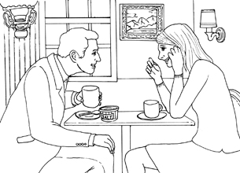

| [無料音声DL付]英語で泣ける ちょっといい話 ちょっといい話シリーズ | |
| ちょっといい話製作委員会 | |
| アルク (2011) | |
Foreward
は じ め に
「ペーパーバックを買ってみたけれど、内容に興味が持てず最後まで読み通せなかった」、「多読に興味があって始めたが、自分のレベルに合った本が見つからずなかなか続かない」------ こんな経験をお持ちの方は少なくないのではないでしょうか。しかし、本書のように、平易な英文で書かれた面白い内容のものなら、きっとスラスラ読めるはず！
本書は、英語圏、特にアメリカで長い間読まれ続けている、作者不明の人々の心に残る物語を収録したリーディング用教材です。
こういったストーリーは、書籍やウェブサイトなど、さまざまな媒体を通じて紹介されています。特にインターネットの普及以降は、国境を越えた普遍的な魅力を持つ多くの物語が、インドネシア、ベトナム、インドなど、英語圏以外の人々の間にも広まっています。
このように多くの人々に読まれ、愛され続けている作者不明の物語の中でも、本書は、「泣ける・心温まる」というテーマを軸に編集部が独自にセレクトした20話を収録しています。
それぞれのストーリーについては、より読みやすくするために、アルクの「標準語彙水準12000」（*SVL ［Standard Vocabulary List］ 12000）に基づき、レベル1～3（初級レベル）の英単語を中心にリライトを行いました。よって、使われている単語は難し過ぎず、内容がダイレクトに伝わるものになっています。
無料でダウンロードできる音声には、すべての物語の英文が収録されています。音読のお手本やリスニング用素材としてなど、「話す」「聞く」力を伸ばす教材としてもお使いいただくことができます。
物語はどれも、味わい深く、読んだらすぐにでも誰かに話したくなるようなものばかり。必ず最後まで読み通せる魅力にあふれた一冊となっています。読み終えたころにはきっと、心がじんと温まると共に、「読み切った達成感」、「多読へのモチベーション」、そして「英語で物語を読む楽しさ」を感じていただけるはずです。
* 「SVL12000」とは、日本人英語学習者にとって有用な英単語を、アルクが全12段階にレベル分けした語彙リストで、SVLはStandard Vocabulary List の略となります。
本書の物語で使用されている英単語は、初級レベルに相当するLEVEL1~LEVEL3の3000語がメインとなっています。
アルク出版編集部 ちょっといい話製作委員会
無料ダウンロード音声について
本書に対応するMP3音声は、すべて無料でダウンロードしていただけます。
音声ダウンロードの方法
※PC専用のサイトです。
まずはこちらへアクセス！
アルク ダウンロードセンター
http://www.alc.co.jp/dl/
（※2014年5月時点の情報。今後詳細が変更になる可能性があります）
① 「ダウンロードリスト」の「英語」の中から、「英語で泣ける ちょっといい話 無料ダウンロード音声」をクリック。
② 申し込みフォームに必要事項をご記入の上送信。
③ メールで「ダウンロードページURL」の案内が届きます。
④ 届いたURLにアクセスして、圧縮ファイルをダウンロードしてください。
ダウンロード音声ファイルについて
圧縮ファイルを解凍ソフトで展開の上、iTunesなどの音声再生ソフトで取りこんでご利用ください。音声再生ソフトでのファイルの取り込み方法や携帯音楽プレーヤーでの利用方法については、ソフトやプレーヤーに付属するマニュアルでご確認ください。
音声ファイルは、音声再生ソフトで次のように表示されます。
出版社名（アーティスト名）：「ALC PRESS INC.」と表示
書名（アルバム名）：『英語で泣ける ちょっといい話』
ダウンロードした音声のトラック名は
[01_A Box Full of Kisses：箱いっぱいのキス]
のように表示されます。本書の該当のトラック番号とトラック名を確認して再生し、学習してください。
Chapter 1
家族にまつわる話
A Box Full of Kisses
箱いっぱいのキス
子から親への愛
クリスマスの前日のことだった。3歳の女の子が、金色の紙を使って一生懸命に箱を包んでいた。どうやら父親へのプレゼントのラッピングをしているようだ。女の子は一体、父親に何を贈るのだろう......？
DL01_A Box Full of Kisses
There was once a father and his three-year-old daughter, Suzie. They didn't have much money, but they lived together happily. One Christmas, Suzie used a roll of gold paper to wrap a box to give to her father. She wrapped it as carefully as she could.*1However, Suzie was only three years old and she couldn't cut straight with the scissors. She also*2tore the paper and had to*3patch it with large pieces of tape. She did her best, but in the end the box didn't look very good.
The next day was Christmas. Suzie gave the golden box to her father.
"This is for you, Daddy," she said. But when her father opened the box, he found that there was nothing in it.
"*4Honey," he said, "there's nothing in this box. You shouldn't*5waste expensive paper for silly things like this."
Suzie looked up at him with tears in her eyes and said, "Oh, Daddy, it's not empty. I*6blew kisses into the box. They're all for you, Daddy." The father was*7crushed. He put his arms around his little girl, and he*8begged her to forgive him.
Suzie's father kept that golden box by his bed for years and*9whenever he felt sad, he would take out one of her kisses and*10remember the love of the child who had put it there.
The point of this story
*11There is nothing more precious than a gift from the heart. The finest gifts are not the most expensive ones but the ones given with love and with the hope of making someone happy. A simple gift made by a child's hands is more special than the finest diamond.
かつて、父親と、スージーという3歳の娘がいました。二人は、あまりお金はありませんでしたが、一緒に幸せに暮らしていました。ある年のクリスマス、スージーは金色の紙を一巻き使って、父親にあげる箱を包みました。彼女はできるだけ注意深く包みました。しかし、スージーはまだ3歳だったので、はさみで真っすぐに切ることができませんでした。それに紙も破いてしまい、大きなテープで継ぎ合わせなくてはなりませんでした。彼女なりに頑張りましたが、結果的に箱はあまり見栄えが良くありませんでした。
次の日がクリスマスでした。スージーはその金色の箱を父親にプレゼントしました。
「これ、パパへのプレゼント」と彼女は言いました。しかし、父親が箱を開けたとき、中には何も入っていませんでした。
「ねえスージー」、彼は言いました。「この箱は空っぽじゃないか。こんなくだらないことに高い紙を無駄遣いしてはいけないよ」
スージーは目に涙をためて父親を見上げ、言いました。「パパ、空っぽじゃないよ。その箱にキスをいっぱい入れたんだから。全部パパのよ」父親は打ちひしがれました。彼は幼い娘を抱きしめ、許してくれるよう頼みました。
スージーの父親はベッドの脇にその金色の箱を何年も置いておき、悲しい気分のときはいつでも、キスを一つ取り出して、それを入れてくれた娘の愛情を思い出したのでした。
このストーリーのポイント
心からの贈り物ほどかけがえのないものはありません。最も素晴らしい贈り物とは最も高価なものではなく、愛情と、誰かを喜ばせたいという思いで贈られたものです。子どもの手で作られたシンプルな贈り物は、最高級のダイヤモンドより特別なものなのです。
*1 however：しかし、けれども
*2 tear：...を破く（toreはtearの過去形）
*3 patch：...を継ぎ合わせる
*4 honey：おまえ、君（恋人や妻、子どもへの呼び掛け）
*5 waste：...を無駄遣いする
*6 blow kisses into the box：箱にキスを投げ入れる、箱に向かって投げキスをする（blewはblowの過去形）
*7 crushed：打ちひしがれて
*8 beg ... to (do)：...に〜するように頼む
*9 whenever he feels sad：悲しい気分のときはいつでも（feltはfeelの過去形）
*10 remember：...を思い出す
*11 there is nothing more precious than ...：...ほどかけがえのないものはない
His Father's Eyes
父の目
親から子への愛
フットボールに全力を注いでいる息子とその父親は、とても仲の良い親子だった。息子はごくまれにしか試合に出られなかったが、父親は、息子のチームの試合には必ず足を運んでいた。そんな二人に、ある日突然悲しい出来事が訪れる。そして、ある真実が明らかになる......。
DL02_His Father's Eyes
A young man named Peter lived alone with his father. Peter's father always took very good care of him. He made him healthy food and took care of him when he was sick. They talked about everything and were very close.
Peter was grateful for all his father did for him and for his father's*1presence at his football games. At those games, his father was always sitting in the stands cheering him on. Although Peter didn't*2get to play most of the time, his father always continued to cheer. And when Peter got home after a game, his father always*3praised him.
Peter loved football and*4was determined to try his best at every practice.*5All through high school he never missed a practice or a game, but he only got to play for a few minutes on the rare occasions that his team*6had a big lead.
When Peter went to*7college, he*8tried out for the football team. Even though he couldn't play very well, the coach accepted him because he*9put his heart and soul into every practice. He also provided the other members with the spirit and energy they*10badly needed.
Peter always kept trying and never missed a practice during his four years at college, but it was just like in high school; he only got to play a few times.
One day at the end of his*11senior football season, he ran onto the practice field and the coach handed him a message. Peter read it and became totally silent. He said quietly to the coach, "My father died in an accident this morning. Is it all right if I miss practice today?" The coach put his arm gently around his shoulders and said, "Take the rest of the week off. And don't even plan to come back for the game on Saturday."
Saturday arrived, and the game was not going well. In the third*12quarter, when the team was ten points behind, Peter quietly*13slipped into the locker room and put on his uniform. The coach and the other players were very surprised to see him back so soon. "Coach, please let me play.*14I've just got to play today," said Peter. He asked the coach again and again. Finally, feeling sorry for him, the coach*15gave in. "All right," he said. "You can go in."
Surprisingly, Peter was doing everything right. He ran, he passed, and he blocked. His team began to win.*16In the closing seconds of the game, he caught a pass and ran all the way across the goal line to get the*17winning points. The fans*18went wild. His team carried him around on their shoulders.
After the stands had emptied and the team had left the locker room, the coach came to him and said, "Peter, you were great! How did you do it?" He looked at the coach, and said, "Well, you know my dad died. What you didn't know is that he was*19blind." Peter*20swallowed hard and*21forced a smile, "Dad came to all my games, but I believe today was the first time he could see me play!"
The point of this story
When a single parent and a single child live alone together, they develop a special*22relationship. Peter and his father had a particularly close relationship*23because of the special*24challenges they*25faced with the father being blind. Also, Peter clearly loved his father very much. He*26proved his love by trying so hard to please his father.
ピーターという名の若者が父親とたった二人で暮らしていました。ピーターの父はいつも彼の世話をよくしていました。健康的な食事を作り、息子が病気のときには看病をしました。彼らは何についてでも話し、とても仲の良い親子でした。
ピーターは父が自分のためにしてくれることすべてに、そしていつも自分のフットボールの試合を観に来てくれることに感謝していました。試合の際、父はいつもスタンドに座って彼に声援を送りました。ピーターはほとんど試合に出られませんでしたが、父はいつも応援し続けました。そして、試合の後ピーターが家に帰ると、父はいつも彼を褒めました。
ピーターはフットボールが大好きだったので、練習では毎回全力を尽くそうと決めていました。高校時代を通して彼は一度も練習や試合を休んだことはありませんでしたが、彼が実際にプレーできたのは、チームがまれに大差で勝っているときの2、3分だけでした。
ピーターは大学に入ると、フットボールチームのトライアウトを受けました。あまりうまくプレーできなかったにもかかわらず、毎回の練習に全身全霊で臨む姿を見て、コーチは彼をチームに入れることにしました。彼はまた、ほかのメンバーが大いに必要としていた精神や活力をももたらしました。
ピーターは常に努力し続け、大学四年間一度も練習を休みませんでしたが、状況は高校時代と同様でした。実際にプレーできたのはほんの数回だったのです。
大学4年のフットボールシーズンも終わりにさしかかったある日、練習場に走って行くと、コーチが彼にメッセージを手渡しました。ピーターはそれを読んで、完全に無言になりました。そしてコーチに向かって静かに、「父が今朝事故で亡くなりました。今日は練習を休んでもいいでしょうか？」と言いました。コーチは彼の肩に優しく腕を回して言いました。「今週いっぱい休みなさい。それに土曜の試合に戻ってこようなんて考えないように」
土曜日になり、試合の雲行きはあまりよくありませんでした。第3クオーターでチームが10点差をつけられると、ピーターは静かにロッカールームに忍び込み、ユニフォームに着替えました。コーチとほかの選手は、彼がこんなに早く戻って来たのを見てとても驚きました。「コーチ、僕を試合に出させてください。今日は出なきゃいけないんです」とピーターは言いました。彼はコーチに何度も何度も頼みました。コーチはピーターを不憫に思い、ついに屈しました。そして「分かった」と言いました。「出てよし」
驚いたことに、ピーターは何もかも完璧にやっていました。走り、パスし、ブロックしました。彼のチームは勝ち始めました。試合終了直前の数秒で、彼はパスをキャッチし、ゴールラインを越えて走り抜け、ついに決勝点を入れました。ファンは狂喜しました。チームメートは彼を肩車して回りました。
スタンドが空っぽになってチームメートがロッカールームを去った後、コーチは彼のところに来て言いました。「ピーター、最高だったぞ！ どうしてあんなことができたんだ？」彼はコーチを見て言いました。「あの、僕の父が亡くなったのはご存じですよね。これはご存じないと思いますが、父は盲目だったんです」ピーターは懸命に涙をこらえ、無理やりに笑顔を作りました。「父は僕の試合すべてに来てくれましたが、今日初めて僕のプレーを見ることができたと思うんです！」
このストーリーのポイント
親ひとり子ひとりだけで暮らしていると、二人の間には特別な関係が育まれます。ピーターの父が盲目だったことで普通とは違う試練に直面し、ピーターと父の間には特に強い結びつきがありました。また、ピーターは明らかに父を深く愛していました。彼は父を喜ばせるために一生懸命頑張ることで、父への愛を証明したのです。
*1 presence：（...が）いること、存在
*2 get to ...：...できるようになる
*3 praise：...を褒める、賞賛する
*4 be determined to ...：...を堅く決心している
*5 all through high school：高校時代を通して、高校時代ずっと
*6 have a big lead：大差で勝っている、大きくリードしている
*7 college：大学
*8 try out for ...：...のトライアウトを受ける、...の一員になるためのテストを受ける
*9 put one's heart and soul into ...：...に全身全霊を込める
*10 badly：大いに
*11 senior：（高校・大学の）最上級生、（大学の）4年生
*12 quarter：クオーター（フットボールで1試合を4分の1に区切った時間）
*13 slip into ...：...へそっと入る、忍び込む
*14 have got to ...：...しなければならない
*15 give in：降参する、屈する（gaveはgiveの過去形）
*16 in the closing seconds of ...：...が終わる直前の数秒間で、...の最後のわずかな時間で
*17 winning point：決勝点
*18 go wild：熱狂する、狂喜する（wentはgoの過去形）
*19 blind：目の不自由な、盲目の
*20 swallow hard：ぐっと息を飲み込む、必死で涙をこらえる
*21 force a smile：無理やり笑顔を作る、作り笑いをする
*22 relationship：関係
*23 because of ...：...のために、...が原因で
*24 challenge：問題、難問、試練
*25 face：直面する
*26 prove：...を証明する
Jimmy's Letter
ジミーの手紙
子から親への愛
母親は、闘病中の息子ジミーに来る日も来る日も付き添っていた。ジミーは小さい体で懸命に病と闘い、いつもひどい痛みに耐えていた。そんなある日、ジミーは手術をしなければならなくなった。果たして、ジミーは無事に手術から戻って来られるのだろうか......？
DL03_Jimmy's Letter
There was once a young boy named Jimmy. He had a serious*1disease and had to spend months in the hospital. The doctors did everything they could but the disease kept getting worse and Jimmy got weaker and weaker. Jimmy was in a lot of pain most of the time. His mother, Sally, sat by his hospital bed day after day, watching him suffer.
One day, the doctors said Jimmy needed to have an*2operation. Sally waited outside the operating room. As soon as she saw the doctor come out, she jumped up. She said, "How is my little boy? Is he going to be OK? When can I see him?" The doctor said, "I'm sorry,*3we did all we could, but Jimmy*4passed away ..." Sally said, "My little Jimmy is dead? Why do little children get terrible diseases?*5Doesn't God care anymore? God, where were you when my son needed you?"
Sally asked a nurse to stay with her while she said goodbye to her son. She*6ran her fingers through his*7thick, red hair. In tears, Sally said, "It was Jimmy's idea to give his body to the university for study. He said it might help somebody else. I said no at first, but Jimmy said, 'Mom I won't be using it after I die. Maybe it will help some other little boy to spend one more day with his mother.' My Jimmy*8had a heart of gold, always thinking of others and always wanting to help if he could."
Sally walked out of the hospital after spending most of the past six months there. She*9sat the bag with Jimmy's things in it on the seat beside her in her car. The drive home was hard and it was even harder to go into her empty house. Sally and Jimmy had lived alone together since Jimmy's father had left four years earlier.
She took the bag to Jimmy's room and placed the model cars and things back in his room exactly where he had always kept them. She lay down across his bed and*10cried herself to sleep holding his pillow.
Sally dreamed that she found a letter beside her on the bed. It said,
Dear Mom,
Don't be sad when you think about me. I know you're going to miss me, but don't think that I will ever forget you or stop loving you. I'll think of you every day and some day we will see each other again.
If you want to*11adopta little boy, he can have my room and my old*12stuffto play with. If you decide to get a girl instead, she probably wouldn't like the same things as boys do, so you will have to buy her dolls and stuff girls like.
I'm with God now. When I talked to him, he said you thought he didn't care anymore. He asked me to tell you that he cares more than you know. He said he took me because he*13couldn'tstand to see me suffer anymore. I want you to know that I don't hurt anymore. My pain is all gone. I'm glad about that. Now I can run around and play and it doesn't hurt.
Signed with love,
Jimmy
The point of this story
There is nothing more painful than a parent losing a child. Sally's dream shows her deep desire to believe that her son is in a better place and is no longer suffering. The letter is also moving because it sounds like it was really written by a little boy.
かつて、ジミーという名の少年がいました。彼は深刻な病を患っていて、何カ月も入院しなければなりませんでした。医師たちはできる限りのことをしましたが、病気は悪化し続け、ジミーはどんどん弱っていきました。ジミーはほとんどいつもひどい痛みに耐えていました。母親のサリーは来る日も来る日も彼の病床に付き添い、彼が苦しむのを見ていました。
ある日のこと、ジミーは手術を受ける必要があると医師たちは言いました。サリーは手術室の外で待ちました。彼女は医師が出てくるのを見ると、すぐさま飛び上がりました。彼女は、「私の息子はどうなんでしょうか？ あの子は大丈夫ですか？ いつ会えるのでしょうか？」と言いました。医師は、「残念ながら、手は尽くしたのですが、ジミーは亡くなりました......」と言いました。サリーは、「私のかわいいジミーは死んだの？ なぜ幼い子どもたちがひどい病気にかからなくてはならないの？ 神はもう私たちのことを見捨てたのですか？ 神様、息子があなたを必要としたときあなたはどこにいたのですか？」と言いました。
サリーは看護師に、息子にお別れを言う間一緒にいてくれるよう頼みました。彼女は彼の豊かな赤毛を手ぐしでとかしました。涙を浮かべて、サリーは言いました。「研究のために大学に献体するというのは、ジミーが言い出したことなんです。あの子はほかの誰かの役に立つかもしれないと言ったんです。私は最初反対したのですが、ジミーは『ママ、僕が死んだ後は使わないんだよ。僕の体をあげれば、どこかの男の子がお母さんと一日でも多く一緒にいられるかもしれないよ』と言ったんです。私のジミーはいつもほかの人のことを考え、できることならいつも誰かのためになりたいと思う、本当に心優しい子だったんです」
サリーはそれまでの6カ月のほとんどを過ごした病院を後にしました。彼女はジミーの物が入ったバッグを自分の車の助手席に置きました。家までの運転はとてもつらく、誰もいない家に入って行くのはさらにつらいものでした。サリーとジミーは、ジミーの父親が4年前に出て行ってから、二人きりで暮らしていました。
彼女はバッグをジミーの部屋に持っていき、プラモデルの車やほかの物を、ジミーがいつも置いていた場所とまったく同じところに置きました。彼女はジミーのベッドに横たわり、彼の枕を抱きしめながら泣き疲れて眠ってしまいました。
サリーはベッドに寝ている自分の横に手紙を見つけた夢を見ました。その手紙にはこう書いてありました。
ママへ
僕のことを思って悲しまないで。僕がいなくなって寂しくなると思うけど、僕がママのことを忘れてしまったり、もう愛さなくなったりすると思わないでね。ママのこと毎日考えるよ、それにいつかまた会えるしね。
もしママが男の子を養子にしたかったら、僕の部屋と古いおもちゃをその子にあげていいよ。もしママが代わりに女の子を引き取ることにしたら、その子はたぶん男の子と同じものは好きじゃないだろうから、お人形とか、女の子が好きなものを買ってあげないといけないね。
僕は今、神様と一緒だよ。神様とお話したとき、ママは神様が見捨てたと思っているって言ってたよ。神様は僕に、ママが思っている以上に神様は僕たちのことを気に掛けているんだってママに伝えてって言ってた。神様が僕をここに連れてきたのは、僕が苦しむのをもう見ていられなかったからなんだって。僕がもう苦しんでいないって知ってほしいんだ。痛みはみんなどこかへ行っちゃったよ。僕はそれがうれしいんだ。今は走り回って遊ぶこともできるし痛くないんだよ。
愛をこめて
ジミー
このストーリーのポイント
親が子どもに先立たれることほどつらいことはありません。サリーの夢は、息子がより良い場所にいて、もう苦しんでいないと信じたいという、彼女の深い願望を表しています。また、この手紙が心を動かすのは、本当に幼い男の子によって書かれたように聞こえるからでしょう。
*1 disease：病気
*2 operation：手術
*3 we did all we could：私たちはできることをすべてやった、できる限りの手は尽くした
*4 pass away：亡くなる
*5 don't care anymore：見捨てる（直訳は「もう気にしない」）
*6 run one's fingers through ...：...に指を通す、（髪）を指でとかす
*7 thick：濃い、豊かな
*8 have a heart of gold：思いやりのある、優しい心を持つ
*9 sit：...を置く（satはsitの過去形）
*10 cry oneself to sleep：泣き疲れて寝る
*11 adopt：...を養子にする
*12 stuff：物
*13 can't stand to (do)：...するのを耐えられない (=can't stand -ing )
My Mom
私の母
親から子への愛
片目しかなかった母親を恥ずかしく思っていた息子は、良心の呵責を覚えながらも、物心が付いたときから母親にきつく当たっていた。そして、その態度は成長してからも一向に変わることはなく......。
DL04_My Mon
My mom only had one eye. I don't remember a time when she had two eyes. When I was little, her missing eye*1frightened me. When people saw us together, I tried to hide. I did love her and care about her, but I*2was ashamed of her because of it.
One day we were at the*3mall and*4ran into some of my classmates. They pointed at her and laughed. The next day at school, one of them said, "Your mom only has one eye!" Then they all laughed again. I wanted to*5disappear. When I got home, I told my mom what had happened at school. I said, "I'm so ashamed. I don't want to go out with you anymore." I felt bad about saying that but I hated the other kids at school laughing at me. I*6ignored my mom's feelings.
I wanted to leave home, and*7have nothing to do with her. So I studied very hard and got a chance to*8study abroad.
Time passed and I got married. I bought a house*9of my own. I had kids of my own. I was happy with my life, my kids and my*10comforts.
Suddenly one day, my mom came to visit me. She hadn't seen me*11in years and she hadn't met her*12grandchildren. When she stood by the door, my children looked at her and were shocked. My daughter started to cry. Then my wife, who had never met my mother, went to the door. She said, "Who are you?*13What do you want?" To this, my mother quietly answered, "Oh, I'm so sorry. I must have the wrong address." I just stood watching from the window. I think she saw me but when I stayed where I was, my mother turned around and left. I felt sorry for her, but when my wife asked if I had seen the woman at the door, I said no.
A few years passed. One day, I got a letter about a meeting of my old classmates. I had always told my wife that I never wanted to return to my*14hometown because I didn't have any good memories of it. But*15somehow I wanted to go to the meeting, so I*16lied to my wife, saying that I was going on a business trip.
After the meeting, I went to our old house just to see it. My neighbors said that my mother had died. They*17handed me a letter that she had wanted me to have. After I read it, I felt terrible. Although I am a grown man, I cried and cried.
My dearest son,
I think of you all the time. I'm sorry that I came to your house and frightened your children a few years ago.
I saw one of your old classmates recently, Toby Adams, and he said he saw your name on the list of people who would be attending your*18school meeting. I was so glad when I heard you were coming for the school meeting. But I'm not too well and I may not be able to get out of bed to see you.
I'm sorry that I always made you feel ashamed when you were growing up. You see, when you were very little, you had an accident and lost an eye. As a mother, I couldn't stand watching you having to grow up with one eye. So I gave you one of mine. I was so pleased that my son wouldn't have to grow up with people laughing at him. I was also pleased that he would be able to see the world*19for me with that eye.
With all my love to you,
Your mother
The point of this story
Most parents will do almost anything for their children. This mother gave up one of her own eyes so that her son would have two, and she never even told him she had done that. The story also shows how the man's foolish ways continued until he finally grew up and became an adult who regrets his past.
私の母は片目しかありませんでした。彼女に両目があったときのことを私は覚えていません。まだ小さかったころ、私は母の眼球のない目におびえていました。母と一緒のところを見られると、私は隠れようとしたものでした。母のことは愛していたし大事に思っていたのですが、片目のない母が恥ずかしかったのです。
ある日、私たちがショッピングモールにいると、クラスメート数人にばったり会いました。彼らは母を指さして笑いました。翌日、学校でそのうちの一人が、「お前の母さんは片目しかない！」と言ってみんなでまた笑いました。私は消えてしまいたいと思いました。家に帰ってから、私は母に学校であったことを話しました。私は、「僕はすごく恥ずかしい。もうお母さんとは一緒に出かけたくない」と言ったのです。そんなことを言って申し訳なく思いましたが、学校でほかの子どもたちに笑われるのが嫌でたまらなかったのです。私は母の気持ちは無視していました。
私は家を出て、母と関わりを持たないようにしたいと思っていました。だから私は一生懸命勉強し、海外に留学するチャンスを得ました。
時は過ぎ、私は結婚しました。自分の家も買いました。自分の子どもも生まれました。私は自分の人生や子どもたち、それに快適な暮らしに満足していました。
ある日突然、母が私を訪ねてきました。彼女は何年も私に会っていませんでしたし、孫の顔を見たことがありませんでした。母が玄関先に立ったとき、子どもたちは母を見てショックを受けました。娘は泣き出しました。それから、私の母と面識のなかった妻が玄関に出ました。彼女は、「あなた誰？ 何の用？」と言いました。これに対して母は静かに答えました。「まあ、ごめんなさい。住所を間違えたようだわ」私は窓から見ながらただ立ちつくしていました。母は私を見たと思いますが、私がそのまま動かずにいると、母はぐるっと向きを変えて行ってしまいました。私は母に申し訳なく思いましたが、妻が私に玄関にいた女の人を見たことがあるかと聞いたとき、「ない」と答えました。
それから数年が過ぎました。ある日、昔のクラスメートとの集まりの案内が届きました。私はいつも妻に、故郷には良い思い出がないので二度と帰りたくないと言っていました。しかし、なぜかその集まりには行きたい気がして、妻には出張に行くとうそをつきました。
集まりの後、私は昔住んでいた家をちょっと見に行きました。近所の人は、母は亡くなったと言いました。彼らは、母が私に届けたかった手紙を手渡してくれました。それを読んで、私はどうしようもない気持ちになりました。もう大人であるにも関わらず、私は泣き続けました。
最愛の息子へ、
あなたのことをいつも思っています。数年前、あなたの家に行って子どもたちを驚かせてしまってごめんなさいね。
最近、あなたの昔のクラスメート、トビー・アダムスくんに会ったのですが、あなたの名前が同窓会の出席者リストに載っていると言っていました。あなたが同窓会に来ると聞いて、すごくうれしかったのよ。でも私は具合があまり良くないので、ベッドから出てあなたに会いに行くことはできないかもしれません。
あなたが子どものころ、いつもお母さんのことで恥ずかしい思いをさせてごめんなさい。あのね、あなたがまだとても小さかったころ、あなたは事故に遭って片目を失ったの。母親として、あなたが片目だけで大きくならなければいけないのを見るのは耐えられなかった。だから私の目を一つあげたのよ。息子が人に笑われないで成長できるのがすごくうれしかったの。あなたがその目で私の代わりに世界を見ることができるのもうれしかったわ。
ありったけの愛をこめて、
あなたの母より
このストーリーのポイント
大抵の親は子どものためならほとんど何でもするでしょう。この母親は、息子が両目を持てるように自分の目を一つ譲り、そうしたことを彼に伝えることさえしませんでした。この話はまた、息子がようやく成長し、過去を悔いる大人になるまで、彼の愚かな振る舞いがいかに続いたかも表しています。
*1 frighten：...をおびえさせる
*2 be ashamed of ...：...を恥じている
*3 mall：ショッピングモール
*4 run into ...：...にばったり会う、...に偶然出会う（ranはrunの過去形）
*5 disappear：消える
*6 ignore：...を無視する
*7 have nothing to do with ...：...とは関係ない、...と関わりを持たない
*8 study abroad：留学する
*9 of my own：私自身の、自分の
*10 comforts：人生を快適にするもの
*11 in years：長年、何年も
*12 grandchild：孫（grandchildrenはgrandchildの複数形）
*13 What do you want?：何の用？
*14 hometown：故郷
*15 somehow：なぜか、どういうわけか
*16 lie：うそをつく
*17 hand：...に手渡す
*18 school meeting：同窓会
*19 for me：私の代わりに
The Doll and the White Rose
人形と白いバラ
親と妹への愛
ある女性が、クリスマスの準備の忙しさに辟易としながら、大勢の客で込み合ったデパートで買い物をしていた。その女性がおもちゃ売り場に行くと、人形の髪を触り続けている一人の男の子に気付いた。しかもその子は、とても悲しそうな表情をしていた。一体、男の子に何があったのだろう......？
DL05_The Doll and the White Rose
On the last day before Christmas, I hurried to the department store to buy the gifts I hadn't*1managed to buy earlier. When I saw all the people there, I thought "This is going to*2take forever. There's always too much to do at Christmas time. It's difficult to find a place to park the car. All the stores are crowded and I have to*3wait in line forever to pay for my things.*4I wish I could just go to sleep and wake up when Christmas is over."
While looking at toys for my kids, I noticed a small boy pressing a doll against his chest. He kept touching the doll's hair and looking sad. I didn't have time to worry about him though, so I carried on with my shopping.
When I went back to the toy section, the little boy was still holding the doll. Finally, I walked over to him and asked why he wanted the doll so much. He said, "My little sister Kelly loved this doll and wanted it for Christmas. She was so sure that Santa Claus would take it to her." I replied that maybe Santa Claus would bring it to her after all, and not to worry. But he said sadly, "No, Santa Claus can't take it to her where she is now."
His eyes were so sad as he said, "Kelly is gone. Daddy says that Mommy is also going soon, so I thought that she could take the doll with her." My heart nearly stopped. The boy looked up at me and said, "I told Daddy to tell Mommy not to go yet. I want her to wait until I get back from the store." Then he showed me a very nice picture of himself laughing and said, "I also want Mommy to take this picture with her so she won't forget me. But, the store clerk says I don't have enough money to buy this." Then he looked at the doll again.
I quickly reached for my wallet and took out a few bills. I said, "Let's check again. Maybe you do have enough money." I added some of my money to his without him seeing and we counted it. There was enough for the doll, and even some extra. He said, "I have enough!" Then he looked at me and added, "I also wanted to have enough money to buy a white rose for my Mommy, and now I can! You know, my Mommy loves white roses."
Two days after I met the little boy, I read in the newspaper that a drunk driver had hit a car carrying a young woman and a little girl. The little girl had died right away, and the mother had passed away a few days later. I thought they must surely have been the little boy's mother and sister. And, the newspaper said the mother's funeral would be held the next day. I*5couldn't stop myself from buying*6a bunch of white roses and going to the*7funeral home where the*8body of the young woman was lying.
Arriving at the funeral home, the young woman was holding a beautiful white rose in her hand with the picture of the little boy and the doll placed on her chest. The little boy was sitting in the front row, crying and crying.*9It broke my heart to see him feeling so sad.
I left the place crying, feeling that my life had been changed forever.
The point of this story
Many people feel a lot of stress during holiday periods because there is always too much to do and too little time. But like this woman learned, it is important to remember the spirit of the holidays and that family is the most important thing in life.
クリスマスの前日、私はそれまで買えないでいたプレゼントを買うために、急いでデパートに行きました。そこにいた人たちを見て、私は思いました。「この調子じゃいつまでたっても終わらないわ。クリスマスの時期は毎年やることが多すぎるのよ。車を停める場所を見つけるのだって大変。どの店も込んでいて、買いたい物の代金を払うにも、長時間列に並ばなきゃいけない。寝て起きるとクリスマスが終わってたらいいのに」
子どもたちに買うおもちゃを見ていたとき、小さな男の子が胸に人形を押し付けているのに気付きました。その子は悲しい顔で人形の髪を触り続けていました。ですが彼のことを心配する時間もなかったので、私は買い物を続けました。
おもちゃ売り場に戻ると、その幼い男の子はまだ人形を抱きしめていました。ついに、私は彼のところに歩いて行き、なぜその人形がそんなに欲しいのか尋ねました。彼は、「妹のケリーがこの人形をすごく気に入っていて、クリスマスプレゼントに欲しがっていたんだ。妹はきっとサンタクロースが持って来てくれるって信じてたんだよ」と言いました。私はおそらくサンタクロースがちゃんとそれを持って来てくれるはずだから心配しないように、と答えました。しかし彼は悲しそうに、「ううん、サンタクロースは妹が今いるところにはそれを持って行けないよ」と言いました。
とても悲しそうな目をしながら、「ケリーはいなくなっちゃったんだ。パパは、ママももうすぐいなくなるんだって言ってるから、それだったらママがケリーに人形を持って行ってあげられるって思ったんだ」と言いました。私は心臓が止まりそうになりました。その男の子は私を見上げ、「僕はパパにママにまだ行かないでって言って、ってお願いしたんだ。僕がお店から帰るまでママに待っていて欲しいから」と言いました。そして、男の子は私に自分の笑顔が写ったとてもすてきな写真を見せて、「僕のことを忘れないように、ママにはこの写真も一緒に持って行って欲しいんだ。でも、お店の人が、僕はこれを買えるだけの十分なお金を持ってないって言うんだ」と言いました。それから人形をもう一度見ました。
私は自分の財布に素早く手を伸ばし、お札を何枚か取り出しました。そして、「もう一度確かめてみましょう。お金が足りるかもしれないわ」と言いました。私は彼が見ていない間に自分のお金をいくらか彼のお金に足して、一緒に数えました。人形を買うのに十分な、いくらか余る位のお金がありました。男の子は、「お金が足りる！」と言いました。それから私を見て、「ママに白いバラを買うお金も欲しかったんだけど、これなら買える！ あのね、ママは白いバラが大好きなんだよ」と言いました。
その男の子に会った2日後、飲酒運転をしたドライバーが若い女性と小さな女の子を乗せた車に衝突したという記事を新聞で読みました。その女の子は即死し、母親はその数日後に亡くなったとありました。私は、二人はあの男の子の母親と妹に違いないと思いました。また新聞には、翌日母親の葬儀があると書いてありました。私は居ても立ってもいられず、白いバラの花束を買って、その若い女性の遺体が安置されている葬儀場に行きました。
葬儀場に到着すると、その若い女性の手には一輪の美しい白いバラが握られ、胸にはあの小さな男の子の写真と人形が置かれていました。男の子は最前列に座り、泣きじゃくっていました。彼がひどく悲しんでいるのを見て、私は胸が張り裂けそうでした。
私は自分のこれからの生き方が変えられたことを感じながら、涙ながらにその場を去りました。
このストーリーのポイント
ホリデーシーズンになると、やるべきことの多さの割に時間が足りず、大きなストレスを感じる人も多いでしょう。しかし、この女性が学んだように、この時期の精神や、人生で一番大切なのは家族であるということを思い出すことが大切なのです。
*1 manage to (do)：なんとか...する
*2 take forever：長時間かかる、いっこうに終わらない
*3 wait in line：一列に並んで待つ
*4 I wish I could ...：...できたらいいのに
*5 can't stop myself from -ing：...せずにはいられない
*6 a bunch of ...：...の束
*7 funeral home：葬儀場
*8 body：遺体
*9 It breaks one's heart to (do)：...して胸が張り裂けそう、心が痛む（brokeはbreakの過去形）
Chapter 2
ためになる／考えさせられる話
Twenty Dollars
20ドル
教訓
あるセミナーで講師が、「この20ドルを欲しい人は？」と尋ねるところからストーリーは始まる。その質問の後講師は、その20ドルを手で握りつぶしたり、靴で踏みつけたりと、何やらお札をぐちゃぐちゃにし始めた。講師はなぜそのような行動を取ったのだろう......？
DL06_Twenty Dollars
A*1well-known speaker started off a speech by holding up a $20 bill. In front of 200 people, he asked, "Who would like this $20 bill?"
Hands started going up. He said, "I am going to give this $20 to one of you --- but first, let me do this."
He then crushed the $20*2note in his hand and asked, "Who still wants it?"
Still the hands were up in the air.
"Well," he replied, "*3what if I do this?"
He dropped it on the floor and started to crush it with his shoe. He picked it up, now crushed and dirty. "Now, who still wants it?"
Still the hands stayed in the air.
"My friends, you have all learned a very valuable lesson.*4No matter what I did to the money, you still wanted it because it did not*5decrease in value. It was still worth $20.
"Many times in our lives, we are dropped, crushed, and*6ground into the*7dirt by the decisions we make and the situations that*8come our way. We*9feel as though we have no value. But no matter what has happened or what will happen, you will never lose your value. Dirty or clean, you are still important to those who love you.
"Your worth comes not from what you do or who you know, but from who you are.
"You are special. Don't ever forget that."
The point of this story
This man is*10what is known as a "*11motivational speaker." They are very popular in the United States. They are asked to speak at businesses to help employees understand company policies and learn how to work together. This particular speech stresses the importance and value of the individual.
ある有名な講師は、20ドル札を持った手を上げることでスピーチを始めました。200人の前で彼は、「この20ドル札が欲しい人はいますか？」と聞きました。
すると手が上がり始めました。彼は、「この20ドルをそのうちのお一人に差し上げます。ただ、まずこうさせてください」と言いました。
そして彼は、その20ドル札を手で握りつぶしてから聞きました。「これでもまだ欲しい人は？」
それでも手は上がったままでした。
「では」、と彼は言いました。「こうしたらどうでしょう？」
彼はそれを床に落とし、靴で踏みつけ始めました。そして、もはやくしゃくしゃになって汚れてしまったお札を拾い上げました。「さて、これでもまだ欲しい人は？」
手はまだ上がったままでした。
「みなさん、あなたたちはとても大切な教訓を学びましたね。このお金に私が何をしようと、あなたがたはまだそれを欲しがりましたね、なぜならお金の価値は下がっていないからです。依然としてそれは20ドルの価値がありました。
私たちの人生には何度も、自分のした決断やたまたま出合った状況のために、落とされたり、つぶされたり、土に踏みつけられたりすることがあります。そんなとき私たちは、自分には価値がないように感じてしまいます。でも、今までどんなことがあっても、そしてこれからどんなことが起きても、あなたの価値は決してなくなりません。汚れていてもきれいでも、あなたを愛する人たちにとってあなたはいつでも大切な存在なのです。
あなたの価値は、あなたがどんな仕事をしているかということや、どんな人脈があるかということにあるのではなく、あなたがどんな人物か、ということにあるのです。
あなたは特別なのです。そのことを決して忘れないでください」
このストーリーのポイント
この男性はいわゆる「モチベーショナルスピーカー」と呼ばれる人です。こういった講演をする人たちはアメリカではとても人気があります。彼らは、社員に会社の方針を理解させるため、またチームワークを学ばせるために企業で講演をするよう依頼されます。特にこのスピーチでは、個々の人間の大切さと価値が強調されています。
*1 well-known：有名な
*2 note：紙幣 (= banknote)
*3 what if ... ?：もし...だったらどうでしょう？
*4 no matter what I did to the money：このお金に私が何をしようとも
*5 decrease in value：価値が下がる
*6 grind：...を踏みつける（groundはgrindの過去分詞）
*7 dirt：土
*8 come one's way：...の行く手にやって来る、...の身に起こる
*9 feel as though ...：まるで...であるかのように感じる
*10 what is known as ...：...として知られるもの
*11 motivational speaker：モチベーショナルスピーカー、やる気を起こさせるための自己啓発セミナーなどの講師
The Wooden Bowl
木の器
反省と教訓
食べ物をこぼしたり、お皿を割ったりする年老いた父親に、息子夫婦は不満を募らせていた。そこで二人は、父親だけ別の場所で食事をさせ、木の器で料理を出すことにした。そんなある日、幼い息子が夫婦のために「ある物」を作っていた。そして、その「ある物」が何かを聞いた二人は、大きな衝撃を受ける。息子が作っていた物とは......？
DL07_The Wooden Bowl
An old man went to live with his son,*1daughter-in-law, and four-year-old*2grandson. The old man's hands shook, his eyes were weak, and he walked slowly.
The family ate together at the dinner table every night. But the old*3grandfather's shaking hands and weak*4sight made eating rather difficult. Peas*5rolled off his spoon onto the floor. When he lifted his glass, milk would often fall on the tablecloth. The son and daughter-in-law became angry with him. "We must do something about my dad," said the son. "*6I've had enough of his milk on the tablecloth, noisy eating, and food on the floor." So, the husband and wife set a small table in the corner. There, the old man ate alone while the rest of the family enjoyed dinner at the dinner table.
Since the old man had broken a dish or two, his food was served in a wooden bowl. Sometimes when the family*7glanced in his direction, he had a tear in his eye as he ate alone. Still, the only words the couple had for him were*8sharp words when he dropped a fork or some food. The four-year-old watched everything in silence.
One evening before supper, the father noticed his son playing with some pieces of wood on the floor. With a sweet voice, he asked the child, "What are you doing down there?" With an equally sweet voice, the boy responded, "Oh, I am making a little bowl for you and Mom to eat your food from when I grow up." The four-year-old smiled and*9went back to work. The words so*10struck the parents that they could not speak. Then tears started to*11stream down their cheeks. Realizing how*12cruel they had been, they both held their son tight, then their father. That evening the husband took the old man's hand and gently led him back to the family table.
For the rest of his days he ate every meal with the family. And, neither husband nor wife cared any longer when a fork was dropped, or the tablecloth was*13soiled.
The point of this story
This story points out that children sometimes have a very clear view of things. Like this couple, adults tend to*14get caught up in the details of daily life and forget to be gentle and kind. This sweet little boy helped his parents see how cruel they were being to their father.
ある歳老いた男性が、息子と義理の娘、そして4歳の孫息子と同居し始めました。その老人の手は震え、視力は弱く、歩くのもゆっくりしていました。
家族は毎晩ディナーテーブルで一緒に食事をしていました。しかし、その歳老いた祖父は、震える手や衰えた視力のせいで、食事をすることがかなり難しくなっていました。豆はスプーンから床に転げ落ちました。グラスを持ち上げると、牛乳がテーブルクロスにこぼれることは度々ありました。老人の息子と義理の娘は彼に腹を立てました。「おやじを何とかしないと」と息子が言いました。「テーブルクロスにこぼれた牛乳や食べるときのうるさい音、それに床に落ちた食べものはもうたくさんだ」そして夫と妻は部屋の隅に小さなテーブルを置きました。残りの家族がディナーテーブルで夕食を楽しむ間、老人はそこで一人で食べました。
老人がお皿を1、2枚割って以来、彼の食事は木の器で出されました。ときどき、家族が老人の方に目をやると、彼は目に涙を浮かべながら一人で食事をしていました。それでも、夫婦の口から出てくるのは、老人がフォークや食べものを落としたときのきつい言葉ばかりでした。彼らの4歳の息子はすべてを黙って見ていました。
ある夜の夕食の前、父は息子が床に座って木片で遊んでいるのに気付きました。父は優しい声で、「そこで何をやっているんだい？」と尋ねました。すると同じように優しい声で、男の子は答えました。「あのね、僕が大きくなったときにパパとママがご飯を食べる器を作ってるんだ」その4歳の息子はにっこりと笑ってまた作り始めました。その言葉に衝撃を受けるあまり、両親は声も出ませんでした。そして涙がほおを伝って流れ始めました。自分たちがいままでどれだけひどいことをしてきたかを悟り、二人は息子を、そして父をきつく抱きしめました。その夜、夫はその老人の手を取り、家族の食卓に優しく招き戻しました。
老人はその日から亡くなるまで、毎食を家族と一緒に食べました。そして、夫も妻も、フォークが落ちようと、テーブルクロスが汚れようと、全く気にしなくなりました。
このストーリーのポイント
この話は、子どもはときにとてもよく物事を見ているということを示しています。この夫婦のように、大人は日々のささいなことに気を取られてしまい、人に優しくしたり親切にしたりすることを忘れてしまいがちです。この優しい男の子の行動によって、両親は、自分たちが父親に対してどんなにひどいことをしていたのかを悟ったのです。
*1 daughter-in-law：義理の娘
*2 grandson：孫息子
*3 grandfather：祖父
*4 sight：視力
*5 roll off ...：...から転がり落ちる
*6 I've had enough of ...：...にうんざりだ、...はもうたくさんだ（'veはhaveの縮約形）
*7 glance in one's direction：...の方をちらりと見る
*8 sharp words：きつい言葉、厳しい言葉
*9 go back to work：作業に戻る、やっていたことを再開する
*10 strike：...の心を打つ、...に衝撃を与える（struckはstrikeの過去形）
*11 stream down ...：...を伝って流れ落ちる
*12 cruel：ひどい
*13 soil：...を汚す
*14 get caught up in ...：...にとらわれる
Unconditional Love
無条件の愛
反省と教訓
戦地に赴いていた息子から両親に、もうじき帰宅するとの電話があった。帰還の知らせとともに息子は、片手と片足を失った身寄りのない友人も実家で一緒に暮らしていきたい、と切々と訴え......。
DL08_Unconditional Love
When*1lieutenant Sam Stevens was finally coming home after having fought in Vietnam, he called his parents from San Francisco.
"Mom and Dad, I'm coming home, but*2I've a favor to ask. I have a really good friend I'd like to bring home."
"Sure," they replied. "*3We'd love to meet him."
"There's something you should know," Sam continued. "He was hurt pretty badly in the fighting. He stepped on a*4land mine and lost an arm and a leg. This guy really means a lot to me, and he has nowhere else to go. I want him to come live with us."
"I'm sorry to hear that, Sam. Maybe we can help him find somewhere to live."
"No, Mom and Dad, I want him to live with us. I'd be nothing without him!" Sam said*5hysterically.
"Sam," said the father, "I understand your feelings about this friend of yours. But, you don't know what you're asking. Someone with such problems would be*6an awful lot of work for us. You know, there are organizations and things that look after guys like that. I think he'll be OK."
At that point, Sam hung up the phone. The parents heard nothing more from him.
A few days later, however, they received a call from the San Francisco police. Sam had died after falling from a building, they were told. The police believed he had*7killed himself. The parents were terribly sad and flew to San Francisco.
On arriving at the police station, they were taken to*8identify the body of their son. They recognized him, but*9to their horror they also discovered something they didn't know. Sam had only one arm and one leg.
The point of this story
The Vietnam War was a bitter affair in U.S. history and stories about this war are often read by Americans as powerful lessons from the past. This particular story looks at*10responsibility. Most of us try to live our lives with as few responsibilities as possible. But by trying to protect our comfortable lives we may ignore the problems of others. If someone is making*11a cry for help it may not always be*12obvious. We must try to be sensitive to the problems of others, especially those we love.
ベトナム戦争からついに帰還しようというとき、サム・スティーブンズ中尉はサンフランシスコから両親に電話をかけました。
「母さん、父さん、もうすぐ家に帰るよ、でも一つだけお願いがあるんだ。すごく仲のいい友達がいて、彼も一緒に連れて帰りたいんだ」
「もちろん」と両親は答えました。「私たちもぜひ会いたいわ」
「ただ一つだけ知っておいて欲しいことがあるんだけど」とサムは続けました。「彼は戦闘でかなりひどい傷を負ったんだ。地雷を踏んで、片腕と片脚を失ってしまって。彼は僕にとって本当に大きな存在で、彼はほかにどこにも行くところがないんだよ。だからうちで一緒に暮らしたいんだ」
「サム、それは気の毒な話ね。どこか彼が住める場所を探してあげられると思うわ」
「母さん、父さん、違うんだ、僕は彼にうちにいて欲しいんだ。彼がいないと僕は何の価値もないんだよ！」サムはひどく興奮して言いました。
「サム」と父が言いました。「おまえが友達を思う気持ちは分かるよ。だけど、おまえは自分がどんな頼みごとをしているのか分かっていない。そんな問題を抱えた人と住めば、私たちがものすごく大変になるんだよ。いいかい、そういう人たちを世話する団体やなんかがあるさ。だから彼はきっと大丈夫だよ」
その時、サムは電話を切りました。それ以上彼から両親への連絡はありませんでした。
しかし数日後、サンフランシスコ警察から電話がありました。両親は、サムがビルから落ちて死んだと告げられました。警察は彼が自殺したと見ていました。両親は悲しみに打ちひしがれ、飛行機でサンフランシスコへ向かいました。
警察署に着くとすぐに、彼らは息子の遺体を確認するために連れて行かれました。遺体を見たとき息子だと分かりましたが、恐ろしいことに、彼らが知らなかった事実を発見することになりました。サムは片腕と片脚しかなかったのです。
このストーリーのポイント
ベトナム戦争はアメリカの歴史の中でも悲惨な出来事であり、この戦争に関する話は過去からの強烈な教訓としてよくアメリカ人に読まれています。特にこの話は責任ということに焦点を当てています。私たちの多くはなるべく責任を負わずに暮らそうとします。しかし、快適な生活を守ろうとすることで、私たちは他人の問題を無視するかもしれないのです。もし誰かが助けを求めて叫んでいても、それが常に分かりやすいとは限りません。私たちはほかの人の問題、特に愛する人の問題に敏感でいるよう努力しなければならないのです。
*1 lieutenant：（米国陸軍などの）中尉、少尉
*2 I've a favor to ask.：お願いがあります。
*3 we'd love to ...：喜んで...する、ぜひとも...したい（'dはwouldの縮約形）
*4 land mine：地雷
*5 hysterically：（非常に）興奮して
*6 an awful lot of ...：ものすごい量の...、大変な...
*7 kill oneself：自殺する
*8 identify：...の身元確認をする
*9 to one's horror：ぞっとしたことに
*10 responsibility：責任
*11 a cry for help：助けを求める叫び
*12 obvious：分かりやすい、明白な
A Parent's Love
親の愛
反省と教訓
病気の父親とその息子が居間でくつろいでいたとき、一羽のハトが窓辺に止まった。父親は物忘れをする病気を患っていたこともあり、「あれは何だ？」と同じ質問を繰り返す。父親の世話に疲れ果てていた息子は、ぞんざいに答えたのだが......。
DL09_A Parent's Love
*1Not long before my father died, we were sitting on the sofa together and suddenly a*2pigeon sat by the window. My father asked, "What is that?" I replied, "It is a pigeon."
After a few minutes, my father asked*3a second time, "What is that?" I said, "Dad, I told you just now. It's a pigeon."
After a little while, he asked me again, "What is that?" I started to*4lose my patience and said in a loud voice, "It's a pigeon, a pigeon!"
I knew I was being cruel to my father, but I was getting tired of taking care of him. You see, my father had an illness that made him forget things. He forgot where he put things and sometimes asked the same question again and again. Sometimes he couldn't even remember my name. Every day, I had to make sure he ate his meals and changed his clothes and took a bath. Sometimes he couldn't remember to do those simple things.
After his funeral, I was*5cleaning out my father's room and found an old diary. It seemed that he had been writing it since I was born. Reading through it, I found a page that said,
"Today my little son, who is now three years old, was sitting with me on the sofa, and a pigeon was sitting by the window. He must have asked me about 20 times what it was, and I replied to him every time that it was a pigeon. I*6held him close each time he asked me. It's difficult to explain but each time he asked me, it made me love him even more."
After reading his diary, I was so sorry for how I'd treated my father and I regretted not being kinder to him. But, it was too late ...
The point of this story
Parents love their children, even when they*7behave badly or do things that make the parents angry. This story points out that all people were once children and their parents took care of them no matter what they did or said. It is important to remember that love and be patient and caring.
父が亡くなる少し前、私たちが一緒にソファーに座っていたところ、突然ハトが窓辺に止まりました。父は私に、「あれは何だ？」と聞くので、私は「ハトだよ」と答えました。
2、3分後、父は私にもう一度「あれは何だ？」と聞いてきたので、私は「お父さん、今言ったじゃない。ハトだよ」と言いました。
少し経つと、父は私にまた「あれは何だ？」と尋ねました。私は我慢できなくなってきて、大きな声で「ハトだよ、ハト！」と言いました。
私は自分が父にひどいことをしていると分かっていましたが、父の世話をすることに疲れてきていました。お分かりかと思いますが、私の父は物忘れをする病気を患っていたのです。彼はどこに物を置いたのか忘れ、時々同じ質問を何度も何度も聞いてきました。時には私の名前さえ思い出せないこともありました。毎日、私は父が食事を済ませたか、着替えをしたか、お風呂に入ったか確認しなければなりませんでした。時として、父はそうした単純なことをするのさえ覚えていられませんでした。
父の葬儀の後、私は父の部屋を片付けていて、古い日記を見つけました。父は私が生まれてからずっとそれを書いていたようでした。ひととおり目を通していると、こう書いてあるページを見つけました。
「今日、今3歳の息子が私と一緒にソファーに座っていたところ、ハトが窓辺に止まっていた。息子は私にそれが何か、20回は聞いてきたに違いない、そして毎回私は息子にそれはハトだよと答えた。聞かれるたびに私は彼をぎゅっと抱き締めた。説明するのは難しいが、聞かれるたびに、私は息子にますます愛情を感じた」
父の日記を読んだ後、私は自分の父への接し方を思うととても申し訳ない気持ちになり、そして父に対してもっと優しくすればよかったと後悔しました。でも、もう遅すぎたのです......。
このストーリーのポイント
親は、子どもが行儀の悪いことをしたり、親を怒らせるようなことをしたりしても、子どもを愛しています。この話は、人は皆、かつて子どもだったことがあり、どんなことをしたり言ったりしても、親が大切にしてくれたことを思い出させてくれます。その愛情を思い出し、我慢強く、思いやりをもって接することが大切なのです。
*1 not long before ...：...の少し前
*2 pigeon：ハト
*3 a second time：もう一度
*4 lose one's patience：我慢できなくなる、しびれを切らす
*5 clean out ...：...の中を片付ける、空にする
*6 hold ... close：...をひしと抱く、ぎゅっと抱き締める
*7 behave badly：行儀が悪い、見苦しい振る舞いをする
Take Hold of Every Moment
今この瞬間を生きる
教訓
ある夫妻が、妻を亡くしたばかりの友人を訪ねた。友人は二人に、数年前に旅行先で買ったものの、大切なときのためにと妻が取って置いたパジャマを見せた。そして、二人にあることを伝えた。それは、人生観を変える一言であった......。
DL10_Take Hold of Every Moment
My husband and I were visiting a friend one day. He picked up a package wrapped in silk paper and said, "This isn't any ordinary package." He opened the box and showed us*1a pair of silk pajamas. "My wife got these the first time we went to New York, eight or nine years ago. She never put them on. She was saving them for a special occasion." He placed the box next to the other clothing he was taking to the funeral home. You see, his wife had just died unexpectedly. He turned to us and said, "Never save something for a special occasion. Every day in your life is a special occasion."
His words changed my life. Now I relax more and worry less. I sit on the porch without worrying about anything. I spend more time with my family, and less at work. I understand that life should be*2a series of experiences to be enjoyed if possible, and survived through if not. I no longer keep anything for later. I use my best dishes every day. I wear new clothes to go to the supermarket,*3if I feel like it. The words "maybe later" and "one day" have left my vocabulary. If something is*4worth seeing, hearing or doing, I try to see, hear or do it now.
I don't know what my friend's wife would have done if she had known she wouldn't be alive the next morning. She might have called old friends to*5make peace over past*6quarrels. It's small things that I would*7regret not doing, if I knew my time had come. I would regret and feel sad, because I hadn't told my family, not enough times at least, how much I loved them.
Now, I try not to*8delay anything that could make us laugh and bring joy into our lives. And, each morning, I say to myself that this day should be a special day. Each day, each hour, each minute, is special.
The point of this story
Many people*9spend too much time worrying about the future*10instead of living in the present. But, as this story points out, it is necessary to stay in contact with family and friends and make time for the things that are truly important.
夫と私はある日友人の元を訪ねていました。その友人はシルクペーパーで包装された包みを取り上げて、「これは普通の包みじゃないんだ」と言いました。そしてその箱を開けて私たちに絹のパジャマを見せてくれました。「8年か9年前、妻と一緒に初めてニューヨークに行ったとき、妻が買ったものなんだ。でも一度も着ることはなかった。彼女はそれを特別な時のために取っておいたんだ」彼はその箱を、葬儀場へ持っていくほかの服の隣に置きました。お分かりのように、彼の奥さんは突然亡くなってしまったのです。友人は私たちの方を向き、「特別な時のためにと言って物を取っておくものじゃない。人生の一日一日が特別な時なんだよ」と言ったのです。
彼の言葉によって私の人生は変わりました。今では前より気楽で、以前ほど心配もしません。何も心配することなく玄関のポーチに座ったりします。家族と過ごす時間を増やし、仕事に費やす時間を減らしています。人生とは、できることなら楽しむべき、それが無理でも生き抜くべき経験の積み重ねだと思っています。私はもう後のために何かを取っておくということはしません。持っている一番いいお皿を毎日使います。気が向けば、スーパーにだって新しい洋服を着ていきます。「たぶん後で」や「いつか」といった言葉は私の語彙からなくなりました。見たり聞いたりしたりする価値があれば、すぐに見たり聞いたりしたりしてみるようにしています。
もしこの友人の奥さんが翌朝生きていないと知っていたなら彼女は何をしていたのか、私には分かりません。昔けんかをした古い友達と仲直りをするために電話をかけたかもしれません。もし私が自分の人生が終わってしまうと知ったら、やっておけばよかったと後悔するのはきっと小さなことについてでしょう。私は家族に自分がどんなに愛していたか伝えていなかった、少なくとも充分には伝えていなかったと思って後悔し、悲しい気持ちになるでしょう。
今では、私たちを笑わせ、人生に喜びをもたらすようなことは決して先延ばしにしないようにしています。そして毎朝、今日はきっと特別な日なんだと自分に言い聞かせます。毎日、毎時間、毎分が特別なのです。
このストーリーのポイント
多くの人は、今を生きるよりも未来を心配することに時間を費やしてしまいます。しかし、この話が指摘しているように、家族や友達とつながり続けることや、本当に大切なことのために時間を作ることが必要なのです。
*1 a pair of pajamas：パジャマ1着（パジャマは必ず上下1組なので複数形）
*2 a series of ...：一連の...
*3 if I feel like it：気が向いたら
*4 worth -ing：...する価値がある、...に値する
*5 make peace：仲直りする、和解する
*6 quarrel：けんか
*7 regret not doing：しなかったことを後悔する
*8 delay：...を遅らせる
*9 spend -ing：...するのに（時間）を使う
*10 instead of ...：...の代わりに
Chapter 3
心温まる／感動する話
Hospital Window
病院の窓
思いやりと友情
寝たきりの二人の男性が、同じ病室に入院していた。その部屋には窓が一つだけあり、窓際の男性、ジョンは、一日に一時間は起き上がることを許されていた。ジョンはその時間にはいつも、窓の外に広がる美しい景色について、もう一人の男性に話して聞かせていたのだが......。
DL11_Hospital Window
Two men, John and Frank, both seriously ill, shared a hospital room. John was allowed to sit up in his bed for an hour each afternoon to improve his breathing. His bed was next to the room's only window. Frank had to spend all his time*1flat on his back.
The men talked for hours*2on end. They spoke of their wives and families, their homes, their jobs, their military service, and places they had been on vacation.
Every afternoon when John could sit up, he would*3pass the time by describing to his roommate all the things he could see outside the window. Frank began to*4live for those one-hour periods when his world would grow by hearing about all the activity and color of the world outside.
John described a park with a lovely lake. He said ducks and swans played on the water while children sailed their model boats. Young lovers walked arm in arm among flowers of every color, and a fine view of the city could be seen in the distance. As John described all this in detail, Frank would close his eyes and imagine the beautiful scene.
Days and weeks passed.
One morning, a day nurse arrived to bring water for their baths only to discover that John had died quietly*5in his sleep. John's body was taken away by the hospital staff. As soon as he could, Frank asked if he could be moved next to the window. The nurse made the switch, and after making sure he was comfortable, she left him alone.
Carefully, he moved onto one elbow to take his first look at the world outside. He slowly turned to look out the window beside the bed. It*6faced a blank wall.
Frank told the nurse how his roommate had described such wonderful things outside this window. The nurse said John was blind and could not even see the wall. She said, "Perhaps he just wanted to*7encourage you."
The point of this story
Of course,*8a simple act of kindness is always a good thing. This story also stresses the importance of the imagination. The blind man used his memory and imagination to create beautiful*9pictures for his roommate.
共に深刻な病を抱えている二人の男性、ジョンとフランクが、一つの病室に入院していました。ジョンは毎日午後に一時間、呼吸を改善するためにベッドから起き上がることを許されていました。彼のベッドはその部屋に一つしかない窓の隣にありました。フランクは常に仰向けで寝ていなければいけませんでした。
二人は何時間もおしゃべりしたものでした。彼らは自分の妻や家族、家、仕事、兵役、そして休暇で行った場所などについて話しました。
ジョンは、ベッドから起き上がることを許されている午後になると毎日、ルームメートに窓から見えるものすべてを説明して過ごしたものでした。フランクは、外の世界の活動や色すべてについて聞くことで自分の世界が広がるその一時間を楽しみに生きるようになりました。
ジョンはすてきな湖のある公園の説明をしました。彼は、子どもたちがボートの模型を浮かべて走らせている湖でアヒルや白鳥が遊んでいる様子を教えました。若い恋人たちが腕を組んで色とりどりの花の間を歩いており、遠くにはすてきな町の景色が見えました。ジョンがこれらのすべてを細かく説明するとき、フランクは目を閉じてその美しい情景を想像したものでした。
数日が経ち、そして数週間が経ちました。
ある朝、昼間の担当の看護師が、二人の入浴用の水を持って病室に入ると、ジョンが寝ている間に静かに死んでしまったのを発見しました。ジョンの遺体は、病院のスタッフによって部屋から運び出されました。フランクはすぐに窓の隣に移してもらえるかどうか聞きました。看護師は彼を窓際の場所に移し、彼の姿勢が楽なことを確かめた後、彼を一人残して病室から出て行きました。
外の世界を初めて見ようと、フランクは注意深く、片ひじに体重をかけて移動しました。ベッドの隣にある窓から外を眺めるため、彼はゆっくりと体の向きを変えました。しかし窓の外にはただ何もない壁があるだけでした。
フランクは看護師に、ルームメートのジョンがこの窓の外の素晴らしい世界をいかに描写してくれたか話しました。看護師は、ジョンは目が不自由で、その壁さえ見えていなかっただろうと言いました。彼女は、「たぶん彼はあなたをただただ元気づけたかったのじゃないかしら」と言いました。
このストーリーのポイント
もちろん、ちょっとした親切な行為はいつでも良いことです。そしてこの話は想像力の大切さも強調しています。その盲目の男性は、自分の記憶と想像力を駆使して、同室の男性のために美しい光景を作り出したのです。
*1 flat on one's back：仰向けに
*2 on end：続けて
*3 pass the time：時間をつぶす、暇をつぶす
*4 live for ...：...のために生きる
*5 in one's sleep：寝ている時に、寝ながら
*6 face a blank wall：何もない（窓や扉のない）壁に面している
*7 encourage：...を元気づける、...を励ます
*8 a simple act of kindness：ちょっとした親切な行為
*9 picture：光景、絵柄
Wet Pants
おもらし
思いやりと友情
ある男の子が、授業中におもらしをしてしまった。「ばれたらクラス中の笑いものになってしまう！」そんな窮地に立たされたとき、男の子は、思いがけない出来事によって危機を脱することができた。その子の身に、一体何が起こったのだろう......？
DL12_Wet Pants
A nine-year-old boy named David was sitting at his desk when suddenly it was wet between his feet, and the front of his pants was wet. He thought his heart would stop because he could not imagine how this had happened. He knew that when the other boys found out, he would*1never hear the end of it. When the girls found out, they would never speak to him again.
David put his head down. He thought, "This is terrible! I need help now! What can I do?" When he looked up, he saw the teacher coming with a look in her eyes that said he had been discovered.
As the teacher was walking toward him, a classmate named Maria was carrying a fish bowl filled with water. Maria*2tripped in front of the teacher and poured the bowl of water into David's lap. David pretended to be a little angry, but all the while he was saying to himself, "Thank you, Maria! Thank you, Maria!"
Now*3all of a sudden, instead of becoming the class joke, David was the object of sympathy. The teacher rushed him downstairs and gave him gym shorts to wear while his pants dried out.*4Meanwhile,*5the rest of his classmates got*6on their hands and knees cleaning up around his desk. The*7sympathy was wonderful.
At the end of the day, as they were waiting for the bus, David walked over to Maria and said quietly, "You did that*8on purpose, didn't you?"
Maria replied quietly, "I*9wet my pants once, too."
The point of this story
This story shows that people can find friends in unexpected places. It is easy to imagine that David became best friends with the kind and gentle Maria. And maybe, many years later, they can smile about the day the fish helped David to*10save face.
デービッドという名の9歳の少年は、席に座っていると突然、自分の両足の間が濡れてズボンの前側も湿っていることに気付きました。彼は、どうしてこんなことになったのか想像すらできず、心臓が止まるかと思いました。ほかの男の子たちが見つけたら、彼らはいつまでもそのことを言い続けるであろうことは分かっていました。女の子たちが知ったら、もう自分とは二度と口を利いてくれないことでしょう。
デービッドはうなだれました。「大変だ！ 誰か今すぐ助けて！ 僕はどうしたらいいんだ？」と彼は心の中で言いました。顔を上げると、先生が、彼に何が起こったか分かっているという目つきをして近づいて来るのが見えました。
先生が彼に向かって歩いていたとき、マリアというクラスメートが水がいっぱい入った水槽を運んでいました。マリアは先生の前でつまずき、水槽の水をデービッドの膝にかけてしまいました。デービッドは少し怒ったふりをしましたが、心の中ではずっと、「ありがとう、マリア！ ありがとう、マリア！」と言い続けていました。
すると突然、デービッドはクラスの笑いものになる代わりに、同情の的になりました。先生は彼を急いで下の階に連れて行き、ズボンが乾くまで履いているための運動用の短パンを渡しました。その間に、ほかの生徒たちは皆、床に四つんばいになって彼の机の周りを掃除しました。それは素晴らしい思いやりでした。
学校が終わって、バスを待っていたとき、デービッドはマリアの方に歩いて行き、小声で「さっきはわざとやったんでしょ？」と言いました。
マリアは小声で、「私もおもらししたことあるの」と答えました。
このストーリーのポイント
この話は、友達は意外なところで見つかるということを示唆しています。デービッドが親切で心優しいマリアと親友になったことは簡単に想像できます。そしておそらく、何年もたった後、彼らは魚のおかげでデービッドの面目が保たれたこの日のことを思い出して笑顔になることでしょう。
*1 never hear the end of it：それを嫌というほど聞かされる、いつまでもそのことを持ち出される
*2 trip：つまずく
*3 all of a sudden：（まったく）突然
*4 meanwhile：その間
*5 the rest：残り
*6 on one's hands and knees：四つんばいになって
*7 sympathy：思いやり
*8 on purpose：わざと
*9 wet one's pants：おもらしをする
*10 save face：面目を保つ
57 Cents
57セント
少女の喜びと望み
粗末な身なりの少女が、日曜学校に参加できず、教会の外で泣いていた。通り掛かった牧師は、彼女が中に入れなかった本当の理由を察し、少女を教会に連れて行き、席を見つけてあげた。少女は心の底から喜び、その日の夜からある夢を抱くようになるのだが......。
DL13_57 Cents
When you are in the city of*1Philadelphia, look up*2Temple Baptist Church, which can seat 3,300 people, and*3Temple University, where thousands of students are trained. Have a look, too, at*4the Good Samaritan Hospital, and at a*5Sunday school building which houses hundreds of Sunday school students.
Near the end of the 19th century, a little girl stood crying near a small church from which she had*6been turned away because it was too crowded. "I can't go to Sunday school," she cried to the*7minister as he walked by. Seeing her old clothes and dirty*8appearance, the minister guessed the reason and, taking her by the hand, took her inside and found a place for her in the Sunday school class. The child was so happy that she went to bed that night thinking of the children who could not go to church.
About two years later, the child*9lay dead in a poor building near the church. Her parents called for the*10kindhearted minister, who had been a friend to their daughter, to handle the*11final arrangements.
As her poor little body was being moved, he found an old, red*12purse among her things. Inside he found 57 cents and a note written by a child's hand which read, "This is to help make the little church bigger so more children can go to Sunday school." For two years, she had saved her money to make this gift.
The minister cried as he read the note and knew right away what he would do. Carrying the note and the old, red purse into the church, he told the story of her love and loyalty. He challenged his staff to*13get busy raising money for a larger building that would have space to welcome anyone who wanted to come in.
Church members gave as much money as they could, while other*14checks came*15from far and wide. A newspaper learned of the story and published it. It was read by a man who offered them*16a parcel of land worth thousands of dollars. When told that the church could not pay much, he offered it for 57 cents.
The point of this story
This story is based on a true event. There really was a little girl named Hattie May Wiatt who died in 1886, and she really did save 57 cents for a new Sunday school. The minister told her story and people were moved. They gave money and the church was built. This story proves the power of a small child's dream.
フィラデルフィア市に行ったら、3300人が入れるテンプル・バプテスト教会や、何千人もの学生が教育を受けているテンプル大学を見上げてみてください。また、グッドサマリタン病院や、何百人もの日曜学校の生徒を収容できる日曜学校の建物にも目を向けてみてください。
19世紀の終わりごろ、小さな少女が、小さな教会の近くで泣きながら立っていました。人が多すぎるという理由でその教会に入るのを断られたのです。彼女はそばを通り掛かった牧師に「日曜学校に行けないの」と叫びました。その古い服とうす汚れた外見から、牧師は彼女が拒否された理由を察し、彼女の手を取って教会の中に入れ、日曜学校の授業で彼女が入れる場所を見つけてあげました。その子はあまりにもうれしくて、その夜、教会に行けない子どもたちのことを思いながら床に就きました。
2年ほどたった後、少女は教会の近くのみすぼらしい建物の中で死んでいました。彼女の両親は、娘の友人でいてくれた心優しい牧師を呼び、彼女の葬儀を執り行ってくれるよう頼みました。
彼女の小さな遺体を移動させていた時、彼は彼女の遺品の中にくたびれた赤い財布を見つけました。その中には57セントと、短い手紙が入っており、それには子どもの手書きで、「もっとたくさんの子どもが日曜学校に行けるよう、あの小さな教会を大きくするのにこれを役立ててください」と書かれていました。この贈り物のために、彼女は2年間自分のお金を貯めていたのです。
牧師は彼女の手紙を読みながら泣き、すぐさま自分がすべきことを悟りました。その手紙とくたびれた赤い財布を持って教会に行き、彼女の愛と誠実さについての話を聞かせました。彼は教会で働く人たちに、入りたい人を誰でも迎え入れることができるもっと大きな建物を建てるよう、すぐに募金活動を始めるよう促しました。
教会員はできる限りのお金を寄付し、また一方で、あちこちから小切手が届きました。ある新聞社はその話を知り、それを紙面で伝えました。ある男性はそれを読んで、何千ドルもの価値がある土地を譲ると申し出ました。教会からあまりお金を支払えないと告げられた男性は、その土地を57セントで譲ったのです。
このストーリーのポイント
この話は実際にあった出来事に基づいています。1886年に亡くなったハッティ・メイ・ワイアットという少女は実在し、彼女は本当に新しい日曜学校のために57セントを貯めていたのです。牧師は彼女の話を伝え、人々は心を動かされました。そしてお金を寄付し、その教会が建てられたのです。この話は小さな子どもの夢が持つ力を証明しています。
*1 Philadelphia：フィラデルフィア（米国ペンシルベニア州最大の都市。独立宣言の地）
*2 Temple Baptist Church：テンプル・バプテスト教会（現在は、The Baptist Templeと呼ばれる）
*3 Temple University：テンプル大学（フィラデルフィアにある州立大学）
*4 the Good Samaritan Hospital：グッドサマリタン病院（現在はTemple University Hospitalと呼ばれる）
*5 Sunday school：（教会の）日曜学校
*6 be turned away：拒否される、追い払われる
*7 minister：牧師、聖職者
*8 appearance：外見
*9 lie dead：死んでいる（layはlieの過去形）
*10 kindhearted：心優しい
*11 final arrangements：葬儀、葬式
*12 purse：財布
*13 get busy -ing：すぐに...に取り掛かる、...し始める
*14 check：小切手
*15 from far and wide：あらゆる所から、あちこちから
*16 a parcel of land：土地の一区画
Just a Few Drops
ほんの数滴
動物への愛と奇跡
乾季のため、一滴の水も無駄にはできない日々が続いていた。そんなある日、幼い男の子が、手で作った「カップ」に何かを入れ、慎重に、ゆっくりと歩きながら森に向かっていた。男の子の母親は、そんな息子の後をついて行ってみることにした。そして、ある感動的な光景を目の当たりにすることになる......。
DL14_Just a Few Drops
Many years ago, we lived in a part of the country that had a*1dry season every year. One year, we had not seen rain in almost a month. The*2crops were dying. The cows had stopped giving milk. The rivers and streams had all*3dried up. Seven*4local farmers would soon lose their farms before that dry season was*5through.
One day, I was in the kitchen making lunch when I saw my six-year-old son, Billy, walking toward the woods. He wasn't walking with the usual easy steps of a small child but with a serious purpose. I could only see his back. He was walking with great effort and trying to be as quiet as possible.
Minutes after he disappeared into the woods, he came running back toward the house. I went back to making lunch thinking that*6whatever he had been doing was done. But soon, he was again walking in that slow, careful way toward the woods. This went on for a while: walking carefully to the woods, running back to the house.
I*7slipped out of the house and followed him. I was very*8careful not to be seen. He*9had both hands cupped in front of him as he walked and was being very careful not to drop what he held in his tiny hands. Tree branches hit his little face but he did not try to avoid them. Then I saw several large deer standing in front of him. Billy walked right up to them. A huge male was very close. But the deer did not threaten him; he didn't even move as Billy sat down. And I saw a tiny baby deer lying on the ground, clearly thirsty and tired from the heat. It lifted its head to*10lap up the water cupped in Billy's hands. When the water was gone, Billy jumped up and ran back to the house, to a*11water faucet that we thought we had turned off. Billy opened it and a small amount of water began to come out. He waited, letting the water slowly fill up his 'cup.' And then I understood. He had*12gotten in trouble the week before for playing with water. We had*13lectured him about the importance of not wasting water.
After filling up his 'cup,' he somehow turned off the faucet by using his elbow. When he stood up and began the journey back, I was there in front of him. His little eyes filled with tears. "I'm not wasting," was all he said. I joined him with a pot of water from the kitchen. I let him*14tend to the baby deer. I stood at the edge of the woods watching him working so hard to save another life.
As the tears that rolled down my face began to hit the ground, they were suddenly joined by other drops ... and more drops ... and more. Some people will probably say that this didn't mean anything, that*15miracles don't really exist, that it*16was bound to rain sometime. And I can't argue with that --- I'm not going to try.*17All I can say is that the rain that came that day saved our farm ... just like the actions of one little boy saved another living*18creature.
The point of this story
Although these people were facing a particularly difficult time in their lives, the little boy showed how pure his heart was by caring for a*19helpless creature.
何年も前のこと、私たちは、毎年乾季がある地域に住んでいました。ある年、約1カ月もの間、私たちは雨を見ていませんでした。作物は枯れかけていました。牛からは乳が出なくなりました。大きい川も小さい川もすべて干上がってしまいました。地元の7軒の農家は乾季が終わるのを待たず、今にも農場を失いそうでした。
ある日、私が台所で昼食を作っていると、6歳の息子ビリーが森に向かって歩いて行くのが見えました。彼は小さい子どもがよくやる気楽な足取りではなく、真剣な目的を持っている様子で歩いていました。私には彼の背中しか見えませんでした。彼はとても苦労して歩いていて、なるべく音をたてないようにしていました。
森に消えてから数分後、息子は走って家の方に戻って来ました。何であれ、やっていたことは終わったのだと思い、私は昼食の準備に戻りました。しかしすぐに、息子はまたあのゆっくりとした注意深い様子で森の方に歩いて行きました。慎重に森に歩いて行っては走って家に戻って来る、これがしばらくの間続きました。
私は家からこっそり出て、彼の後をつけました。見られないよう充分注意しました。彼は体の前で両手をカップのようにすぼめながら歩き、その小さな手の中に持っているものを落とさないよう細心の注意を払っていました。木の枝が彼の小さな顔に当たっても、彼はよけようともしませんでした。そして、彼の前に何頭かの大きな鹿が立っているのが見えました。ビリーは彼らのすぐそばまで歩いて行きました。巨大な雄鹿が彼のすぐそばにいました。しかしその鹿は彼を怖がらせようとはしませんでした。ビリーが腰を下ろした時、鹿は動きもしなかったのです。それから私はまだほんの小さな赤ちゃん鹿が、明らかにのどが渇き、暑さに疲れた様子で地面に寝そべっているのを見ました。その小鹿は頭を上げ、ビリーの両手の中の水をピチャピチャと音を立てて飲みました。水が無くなると、ビリーは跳ね上がり、走って家に、そして私たちが止めておいたはずの水道の蛇口のところに戻りました。ビリーが蛇口を開けると、わずかな水が出てきました。彼は自分の手で作った「カップ」に水がゆっくりたまるのを待ちました。そしてそのとき私は理解しました。彼はその前の週、水で遊んでいてしかられていたのです。私たちは彼に水を無駄遣いしないことの大切さをお説教していました。
自分の「カップ」がいっぱいになると、彼はひじを使ってなんとか蛇口を閉めました。立ち上がって、来た道をまた戻ろうとしたとき、私はすぐそこ、彼の目の前にいました。彼の小さな目には涙があふれていました。彼は「僕は無駄にしてるんじゃない」とだけ言いました。私は台所からくんだ鍋いっぱいの水を持って彼と一緒に行きました。そして彼に赤ちゃん鹿の世話をさせました。私は森の端に立って、息子がほかの命を必死で救おうとしているのを見ていました。
私の顔を伝った涙が地面に落ち始めると、突然別のしずくも一緒に落ちてきました......何滴も......何滴も。これは何の意味もないことだ、奇跡なんてものは現実には存在しない、どうせいつか雨は降ることになっていたんだという人もおそらくいるでしょう。私はそれに反論することはできません ------ しようとも思いません。ただ私に言えるのは、その日に降った雨が私たちの農場を救ってくれたということだけです......一人の小さな男の子の行動がほかの生き物を救ったのとまさに同じように。
このストーリーのポイント
ここに出てくる人たちは人生でとりわけ困難な時期に直面していましたが、その小さな男の子は無力な生き物の世話をすることで、どんなに純粋な心を持っているかを示してくれました。
*1 dry season：乾季
*2 crop：作物、収穫物
*3 dry up：干上がる
*4 local：地元の
*5 through：終わって
*6 whatever：何にせよ、何であれ
*7 slip out of ...：...をそっと抜け出す
*8 careful not to be seen：見られないように注意して
*9 have both hands cupped：両手をカップの形にへこませる
*10 lap up：舌でピチャピチャ飲む
*11 water faucet：蛇口
*12 get in trouble：面倒なことに巻き込まれる
*13 lecture：...に説教する、...をしかる
*14 tend to ...：...の世話をする
*15 miracle：奇跡
*16 be bound to (do)：...することになっている、...する運命にある
*17 all I can say is ...：私に言えることは...だけ
*18 creature：生き物、動物
*19 helpless：無力な
A Glass of Milk
一杯の牛乳
思いやり
おなかを空かせていた貧しい少年は、心優しい女性に一杯の牛乳を恵んでもらい大きな励ましを与えられる。時が経ち......。
DL15_A Glass of Milk
A young boy from a poor*1neighborhood was selling*2candy*3door-to-door to*4get through school. One day, with only one dollar*5to his name, he was so hungry that when he got to the next house, he wanted to ask for a meal. When a woman of middle age opened the door, he*6lost his nerve and asked for a glass of water instead. The woman, not*7well-off herself, thought he looked hungry so she brought him a large glass of milk.
"This is all I have," he said as he slowly finished the milk and took the dollar out of his pocket. The woman replied, "*8You don't owe me anything. My mother taught me never to accept money for kindness. Be strong, young man. You'll be great in the future." The boy left the woman's house feeling not only stronger in his body but also encouraged by her kindness.
After that day, the woman sometimes thought about the boy and her*9impressions from that day. It was a happy memory for her as she never had any children of her own.
In time, she got older and finally fell ill. The doctors did not know what was wrong so they sent her to a hospital in the city.
The woman needed a difficult operation. When she woke up, she was very happy to be alive but she knew she faced another challenge. Without*10health insurance or any family, she knew she would be paying off her*11medical bills for the rest of her life.
The next day, a doctor knocked on her door. In his hand was a medical bill. He smiled when he gave it to her. "Open it, please." She was nervous as she opened the envelope. The bill inside said, "*12Paid in full with one glass of milk." Then she recognized the boy.
The point of this story
There is an*13old saying in English: "*14One good turn deserves another." It means that you should do something good for someone who has done good for you. The woman helped the man when he was in trouble, and years later he helped her*15in return. Many people believe there is balance in nature and the world, and this kind of story supports that belief.
貧しい地区で育ったある少年が、学校を出るために家々を回ってキャンデーを売り歩いていました。ある日、彼は1ドルしか持っておらず、次の家に着いたら食事を恵んでもらおうと思うほどおなかが空いていました。中年の女性がドアを開けた時、彼はおじけづいてしまい、代わりに一杯の水をお願いしました。その女性も決して裕福ではありませんでしたが、おなかが減っていそうな彼の様子を見て、大きなグラスに注いだ牛乳を持ってきてくれました。
「これしかもっていないんです」彼はゆっくりとその牛乳を飲み干すと、ポケットから1ドル札を取り出して言いました。その女性は「お金を払う必要なんてないわ。親切をするのにお金を受け取ってはいけないと母から教わったの。あなた、強くなるのよ。将来あなたは素晴らしい人になるわ」と答えました。少年がその女性の家を去るとき、彼は体に力がわくのを感じただけでなく、彼女の優しさに励まされた気持ちになりました。
その日以来、女性は時々その少年のこととその日の印象を思い出していました。彼女には自分の子どもがいなかったので、それは彼女にとって幸せな思い出でした。
時が過ぎ、彼女は歳をとって、ついには病気になってしまいました。医師たちはどこが悪いのか分からなかったので、市内の病院に彼女を移しました。
その女性は難しい手術を必要としていました。目が覚めたとき、彼女は生きていてよかったという気持ちになったのですが、別の困難に直面していることも知っていました。健康保険もなく家族もいないので、死ぬまで医療費を払い続けなければならないと分かっていたのです。
その翌日、一人の医師が彼女の病室のドアをノックしました。彼の手には医療費の請求書がありました。彼は微笑みながらそれを彼女に渡しました。「どうぞ開けてください」彼女は緊張しながら封筒を開けました。請求書の中には、「一杯の牛乳により全額返済済み」と書いてありました。そのとき彼女は、彼があのときの少年だと気づいたのでした。
このストーリーのポイント
英語には「情けは人のためならず」という古いことわざがあります。これは、自分に対して良いことをしてくれた人には自分も良いことをしなければならない、という意味です。その女性は男性が困っていたとき手を差し伸べ、何年もたってから、彼はお返しに彼女を助けました。多くの人は、自然界や人間社会にはバランスがあると信じており、この種の話はそのような信念を裏付けています。
*1 neighborhood：地域
*2 candy：キャンデー、お菓子（チョコレート、キャラメルなども含む。日本のキャンデーより範囲が広い）
*3 door-to-door：戸ごとに、戸別訪問して
*4 get through school：学校を出る、学校を卒業する
*5 to one's name：自分の所有物として
*6 lose one's nerve：おじけづく、気後れする
*7 well-off：裕福な
*8 You don't owe me anything.：あなたは私に何の借りもない。
*9 impression：印象
*10 health insurance：健康保険
*11 medical bill：医療費 （p110の2行目のa medical billは「医療費の請求書」）
*12 paid in full：全額支払い済みで、完済されて
*13 old saying：古いことわざ
*14 One good turn deserves another.：情けは人のためならず。良いことをすれば自分に戻ってくる。（good turnは「善行」）
*15 in return：お返しに
Awful Passenger
ひどい乗客
正義と平等
ニューヨーク行きのフライトで、一人の女性が乗務員を呼びつけた。何やら不満があるようだ。女性の苦情を聞いてみると、それは理不尽極まりないもので、周りの乗客も驚きを隠せないでいた。さて、その女性のクレームは、どのようにして解決されるのだろうか......？
DL16_Awful Passenger
On a flight from Dallas to New York, a white woman of middle age*1found herself sitting next to a black man. She called a stewardess over to complain about her seat.
"*2What seems to be the problem?" asked the stewardess.
"*3Can't you see?" she said, "You've sat me next to a black man. I*4can't possibly sit next to him. Find me another seat!"
"Please calm down," the stewardess replied. "This flight is very full, but I'll tell you what I'll do. I'll go and see if we have any seats available in business class or first class."
The woman gave a*5mean look at the surprised black man beside her. Many of the surrounding passengers were also surprised. A few minutes later the stewardess returned with good news, which she delivered to the woman, who*6could not help but look at the people around her with a*7self-satisfied smile.
"I'm sorry, but as I suspected, economy is full. I spoke to the*8services director, and business class is also full. However, we do have one seat in first class." Before the woman had a chance to answer, the stewardess continued, "It is most unusual to make this kind of change, but I have special*9permission from the*10captain. He agreed that it is not fair for someone to be forced to sit next to such an awful person." The stewardess then turned to the black man and said, "So if you'd like to*11collect your things, sir, I have your seat ready for you."
At that point, the surrounding passengers stood up and cheered while the man walked to the front of the plane.
The point of this story
*12There is no excuse for the way this awful woman behaved. But this is a wonderful story because the stewardess found a clever way to solve a serious problem.
ダラス発ニューヨーク行きの飛行機で、ある白人の中年女性が黒人男性の隣の席になったと知りました。彼女は席について文句を言おうと、スチュワーデスを呼びました。
「いかがなさいましたか？」とスチュワーデスは尋ねました。
「見て分からないの？」と彼女は言いました。「私は黒人男の隣に座らせられているのよ。隣に座るなんて無理な話だわ。別の席を探してちょうだい！」
「どうか落ち着いてください」とスチュワーデスは答えました。「あいにくこの便は満席なのですが、それではこうしましょう。ビジネスクラスかファーストクラスに空いている席がないか見てまいります」
その女性は隣で驚いている黒人男性を意地悪な目つきで見ました。周りの乗客の多くも驚いていました。数分後、周りの人たちへの自己満足の笑みを隠せないでいたその女性のところにスチュワーデスが良い知らせを持って戻ってきました。
「申し訳ないのですが、やはりエコノミークラスは満席でございます。パーサーと話をしましたが、ビジネスクラスも満席とのことです。でも、ファーストクラスに一席だけ空席がございました」女性が答える間もなく、スチュワーデスは続けました。「このような変更をすることは非常にまれですが、機長から特別な許可を得ました。そのようなひどい人の隣に座らなければならないのは、お客さまにとって大変不当だと機長も申しておりました」そしてスチュワーデスは黒人男性の方を向き、「ですのでお客さま、お荷物をお持ちいただければ、もうお席のご用意はできております」と言いました。
その瞬間、周りの乗客は立ち上がり、男性が機内の前方に歩いて行くのを歓声で見送ったのでした。
このストーリーのポイント
この非常識な女性の振る舞いには弁解の余地がありません。しかし、これはスチュワーデスが機転を利かせて難しい問題を解決した素晴らしい話です。
*1 find oneself ...：自分が...だと知る・気付く
*2 What seems to be the problem?：どうなさいましたか？
*3 Can't you see?：分からない？ 見えないの？
*4 can't possibly ...：とても...できない
*5 mean look：意地悪な目つき
*6 can't help but ...：つい...してしまう、...せずにはいられない
*7 self-satisfied smile：自己満足の笑み
*8 services director：パーサー
*9 permission：許可
*10 captain：機長
*11 collect one's things：荷物をまとめる
*12 there's no excuse for ...：...には弁解の余地がない、...はどんな理由があっても許されない
At a Special Olympics
スペシャルオリンピックスにて
思いやりと勇気
そろそろ100ヤード走がスタートする。9人の選手はそれぞれ、レースを心待ちにしている様子だ。スタートの合図とともに、9人は一斉に走り始めた。が、選手の1人が転倒してしまう。それを見たほかの選手うち数名は、ある行動を取る。さて、彼らが取った行動とは......？
DL17_At a Special Olympics
A few years ago at a*1Special Olympics, nine runners, all with*2mental challenges, got together at the starting line for the*3100-yard-race. All the runners had trained long and hard to take part in this*4competition. They were all very excited and looking forward to the race.
*5At the gun, they all*6set off with the hope that they could run the race to the finish and win. All, that is,*7except one runner who fell on the course, rolled over a couple of times and didn't get up right away.
Some of the others noticed. They slowed down. Two of them turned around and went back. One girl with*8Down's syndrome bent down and kissed him and said, "This will make it better." Everyone in the stadium stood, and the cheering went on for several minutes. The runners linked arms and walked across the finish line together.
"Let me win. But if I cannot win,*9let me be brave in the attempt," is the Special Olympics sportsmen and sportswomen's*10promise. People say that winning isn't everything. They say that taking part in an event is more important than winning. Of course, the runners who went back wanted to win the race, but to help their fellow runner took far greater courage and strength.
The point of this story
This story shows that some things are more important than winning. It also shows that competition is not only about finding winners and losers, it is about spirit.
数年前、スペシャルオリンピックスで、いずれも知的発達障害を持った9人のランナーが100ヤード競争のスタートラインに集まりました。すべてのランナーたちは、この競技に参加するため、長い間厳しい訓練をしてきました。彼らは皆、とても興奮してレースを楽しみにしていました。
ピストルが鳴ると、彼らは皆、最後までこのレースを走りきって勝ちたいという思いで飛び出しました。一人のランナーだけはコースの途中で転倒して、2，3度地面を転がり、すぐには起き上がりませんでした。
ほかのランナーのうち何人かが気付きました。彼らは走るスピードを落としました。そのうちの二人はUターンして、コースを戻りました。ダウン症を患っている一人の少女がしゃがんで、彼にキスをして言いました。「これで良くなるわ」スタジアムにいた人は皆立ち上がり、歓声が数分間続きました。ランナーたちは腕を組んで、ゴールラインを一緒に歩いてまたぎました。
「私に勝たせてください。たとえ勝てなくても、この試みにおいて勇敢でいさせてください」これがスペシャルオリンピックスに参加するスポーツマンとスポーツウーマンの誓いです。勝つことがすべてではないと人々は言います。勝つことより参加することに意義があるとも言います。もちろん、コースを戻ったランナーたちは勝ちたかったのですが、仲間のランナーを助けることの方がより大きな勇気と強さを必要としました。
このストーリーのポイント
この話は、勝つことよりもっと大切なことがあることを示しています。また、競技とは勝者と敗者を決めるためだけのものではなく、精神性に関わるものだということも表しています。
*1 Special Olympics：スペシャルオリンピックス（知的発達障害を持った人のためのスポーツトレーニングと競技会。運営組織は1968年アメリカで設立され、現在では世界大会も開催されている）
*2 mental challenges：知的発達障害（英語では、障害をchallengeと言うのが一般的）
*3 100-yard-race：100ヤード競争（1ヤードは約0.9メートル）
*4 competition：競技会、試合
*5 at the gun：ピストルが鳴ると、スタートの合図で
*6 set off：出発する（過去形もset）
*7 except ...：...を除いて、...以外は
*8 Down's syndrome：ダウン症
*9 let me be brave in the attempt：この試みにおいて勇敢でいさせてください
*10 promise：約束、契約、誓い
Chapter 4
愛についての話
A Silent Love
無言の愛
純愛
若い二人の男女は、女性の両親から交際を反対されていたものの、愛を貫き婚約を果たした。その後、男性は留学したため離れ離れではあったが、二人は着実に愛を育んでいた。しかしある日突然、女性は男性に別れを告げる......。
DL18_A Silent Love
From the very beginning, Gina's family*1objected very much to her dating Todd. They said it had to do with family background and that Gina would suffer for the rest of her life if she were with him.
After a couple of years, Todd graduated from college and decided to study abroad. Before leaving, he proposed to Gina, saying, "I'm not very*2good with words. But all I know is that I love you. If you allow me, I will take care of you for the rest of my life.*3As for your family, I'll try my best to make them like me. Will you marry me?" Gina agreed. Then Todd slipped a ring onto her finger. Finally, because of Todd's strong spirit, the family gave in.
Gina got a job while Todd was studying abroad. One day, when Gina was*4on her way to work, she was hit by a car. When she woke up, she saw her parents beside her bed. Seeing her mother crying, she wanted to comfort her. But she soon realized that she couldn't make a sound. The doctor said that the impact on her brain had caused her to lose her voice. Seeing how sad her parents were and not being able to speak, she cried.
When she*5was released from the hospital, everything seemed to be the same,*6except for the ringing of the phone, which broke her heart every time because she could not speak to Todd.
Of course, Gina still loved Todd from the bottom of her heart but, not wanting to*7make trouble for him, she wrote him a letter saying that she was tired of waiting for him and had found a new boyfriend. Then she returned his ring. Todd sent*8hundreds of replies, and tried many times to call her, but all Gina could do was cry.
Gina's parents decided to move, hoping that in time she would forget everything and be happy. Gina learned*9sign language and started a new life. She told herself every day that she must forget Todd.
One day, a friend told her that Todd was back. Gina asked her friend not to tell him what had happened to her.
A year passed and her friend came with an envelope, containing an invitation to Todd's wedding. When she looked at the invitation, she saw her own name on it. Then she saw Todd standing in front of her. He used sign language to tell her, "I've spent a year learning sign language, just to let you know that I haven't forgotten your promise. Let me have the chance to be your voice. I love you."*10With that, he slipped the ring back onto her finger.
Gina finally smiled.
The point of this story
"Love*11conquers all." Many people believe that true love can make anything happen and that if a person truly loves someone, they will do anything they can to make them happy.
ジーナがトッドと付き合うことに、ジーナの家族は最初から反対していました。彼の家庭環境の問題であり、彼と一緒にいるとジーナは一生苦労することになると言いました。
2、3年後、トッドは大学を卒業し、海外に留学することを決めました。町を離れる前、彼はジーナにプロポーズして、「僕は言葉で表現するのがあまり得意じゃない。でも君を愛していることだけは確かだ。君がよければ、僕は一生涯君を守るよ。君の家族については、気に入ってもらえるようできるだけの努力をする。僕と結婚してくれますか？」と言いました。ジーナはそれを受けました。そしてトッドは彼女の指に指輪をはめました。トッドの強い熱情に負け、ジーナの家族もついに折れました。
トッドの留学中に、ジーナは仕事を見つけました。ある日、ジーナは仕事に向かう途中で、車にはねられてしまいました。目が覚めたとき、両親がベッドの横にいるのが見えました。母親が泣いているのを見て、彼女は慰めようとしました。しかし、すぐに自分は声を発することができないことに気付きました。脳に加わった衝撃によって声を失ってしまったのだと医者に言われました。両親が悲しんでいるのを見ているのに話すこともできず、彼女は泣きました。
退院したとき、すべては以前と同じように感じましたが、ただ一つ、電話の鳴る音を聞くときだけは、トッドと話せないという事実に毎回胸が張り裂けそうになりました。
もちろん、ジーナはトッドのことを変わらず心の底から愛していましたが、彼に迷惑を掛けたくなくて、彼女は、もうあなたを待つのに疲れたし、新しい恋人ができたという手紙を書きました。そして指輪を返しました。トッドは彼女に数え切れないほどの返事を送り、彼女と話すために何度も電話をかけましたが、ジーナにできたのはただ泣くことだけでした。
ジーナの両親は、やがて彼女がすべてを忘れて幸せになってくれることを願い、引っ越すことを決めました。ジーナは手話を学び、新たな生活を始めました。彼女は毎日自分に、トッドを忘れなければいけないと言い聞かせました。
ある日、友人からトッドが戻ってきたと聞きました。ジーナはその友人に、彼女にあったことを彼に話さないように頼みました。
一年が過ぎ、トッドの結婚式の招待状が入った封筒を持って友人がやって来ました。その招待状を見ると、自分の名前が書いてあるのが目に入りました。そのすぐ後に、彼女の目の前には彼が立っているのが見えました。彼は手話で、「君との約束を忘れていないことを伝えるため、手話を身に付けるのに一年かかったよ。君の声になるチャンスが欲しい。君を愛しているよ」と告げました。そして、彼はあの指輪を彼女の指に再びはめました。
ジーナはついに微笑みました。
このストーリーのポイント
「愛はすべてに打ち勝つ」。多くの人は、真実の愛はすべてを可能にし、本当に誰かを愛している人は、二人が幸せになるためにできる限りのことをするだろうと信じています。
*1 object：反対する
*2 good with words：言葉が巧みだ、言葉で表現するのがうまい
*3 as for ...：...に関しては、...に関して言えば
*4 on one's way to ...：...へ行く途中で
*5 be released from the hospital：退院する
*6 except for ...：...を除いては
*7 make trouble for ...：...に迷惑を掛ける
*8 hundreds of ...：何百もの...、たくさんの...
*9 sign language：手話
*10 with that：そう言って、そうして（thatは直前のトッドのセリフを指している）
*11 conquer：...を征服する、...に打ち勝つ
At the Fence
フェンスで
悲恋
6歳のときに初めて出会った二人は、それ以来学校から帰ると、いつも家の近くにあるフェンスのそばで語り合っていた。そして、小、中、高校時代を経る中で、女性から男性への気持ちはいつしか恋心に変わっていた。しかし、気持ちを伝えられないまま月日は過ぎ......。
DL19_At the Fence
It all started when I was six years old. One day while I was playing outside by a fence near my house, I met a boy named Jonah. After that, we would meet at the fence all the time. I talked about school and told him all my secrets. He was very quiet and only listened to me, but I found him easy to talk to. In school, we had separate friends but when we got home we were always together.
All through high school, I always*1thought of Jonah as a friend. But I knew*2deep inside that I really felt differently. The night we graduated,*3even though we had different dates, I wanted to be with him. That night, I went to his house to tell him how I felt but all I did was sit with him watching the stars. I looked into his eyes and listened to him talk about his dreams, how he wanted to get married and*4settle down.
After college, Jonah got a job far away. I was happy for him but at the same time I was sad to see him go. I was also sad because I hadn't told him what was inside my heart.
Later, I got a job and then worked my way up to become financial manager. I was proud of what I had done. Then one day I got an invitation to a wedding. It was from Jonah.
The wedding was a big occasion. I met his new wife and, of course, I talked to him, too. I fell in love with him*5all over again. I tried to have fun that night but*6it was killing me inside watching him being so happy.
We often wrote to each other, but at one point his letters stopped coming. Finally, I received a*7note that said, "Meet me at the fence." I was happy to see him at last but he was sad because his marriage had ended.*8That was why he hadn't written me.
We went back to my house and talked and laughed. But all this time, I couldn't tell him how I felt. In the days that followed, we had fun and he forgot about his problems. When it came time for him to head back home, I saw him off and cried. Then I didn't hear from him for a long time.
One day, a few months later, I got a call from a lawyer who said that Jonah had died in a car accident. My heart broke. I*9cried bitter tears all that night.
The day of his funeral came and I attended the*10ceremony. Although he was still young, Jonah had*11by chance written a*12will. When the will was read after his funeral, I was surprised to discover that he had left me one thing: his diary. I didn't know what to think. I took it and flew back home.
On the plane, I started reading the diary. It started with the day we first met. I read on until I started to cry. The diary said that he had fallen in love with me when we first met. But he was too afraid to tell me what he felt. It said he wanted to tell me many times, but he was afraid. It said he was always unhappy until he*13had no choice but to leave his wife. It said the best time in his life was reading my letters. Finally, the diary ended when it said, "Today I will tell her I love her."
That was the day he was killed, the day I was going to finally find out what was really in his heart ...
The point of this story
This story points out the importance of communication in human relationships. If these two people had spoken of their true feelings, they could have had many happy years together. Instead, they both stayed silent and their story ended in a very sad way.
すべては私が6歳の時に始まりました。ある日、家の近くのフェンスのそばで遊んでいると、ジョナという名前の男の子に出会いました。それ以後、私たちはいつもそのフェンスのところで会っていました。私は学校のことを彼に話し、秘密もすべて打ち明けました。彼はとても静かで私の話を聞くだけでしたが、私は彼といると話しやすいと感じていました。学校では、それぞれ別の友達がいましたが、家に帰ると私たちはいつも一緒にいました。
高校時代ずっと、私はジョナのことを友達として見ていました。しかし、私は心の底で本当は違った感情を抱いていることを分かっていました。卒業した日の夜、私たちは別々の相手とデートをしましたが、私が一緒にいたかったのは彼でした。その夜、私は自分の気持ちを伝えるために彼の家に行きましたが、結局、彼の隣に座って星を見ただけでした。私は彼の目をじっと見て、彼が自分の夢、どんな結婚をしてどんな家庭を築きたいかという夢を語るのを聞きました。
大学を出た後、ジョナは遠く離れたところに仕事を見つけました。私はうれしく思いましたが、同時に、彼が行ってしまうのを見るのはつらいことでした。また、彼に自分の本心を伝えていないことにも悲しくなりました。
後に、私は就職し、財務部長にまで出世しました。私は自分のやってきたことを誇りに思っていました。そしてある日、私は結婚式の招待状を受け取りました。それはジョナからのものでした。
彼の結婚式は大きな出来事でした。私は彼の新妻に会い、もちろん、彼とも話しました。私は彼にまた恋をしてしまいました。私はその夜楽しもうとしましたが、彼のとても幸せそうな様子を見て、心の中は張り裂けそうでした。
私たちはお互いよく手紙を送り合いましたが、ある時を境に彼からの手紙は来なくなりました。ついに来た短い手紙には、「フェンスのところで会おう」と書いてありました。私はようやく彼と会えてうれしい気持ちでしたが、彼は結婚生活が終わってしまい、悲しんでいました。そういうことがあって、彼は私に手紙を書いていなかったのです。
私たちは一緒に私の家に戻り、語り合い笑いました。しかしこの時もずっと私は彼に自分の気持ちを話すことができませんでした。その日以降、私たちは楽しい日々を過ごし、彼は抱えている問題のことを忘れました。彼が自分の町に帰らなければならない時が来たとき、私は彼を見送り、泣いてしまいました。その後、長い間彼から連絡はありませんでした。
数カ月後のある日、弁護士から電話があり、ジョナが交通事故で亡くなったと知らされました。私の心は引き裂かれました。その夜ずっと、私は悲しみの涙にくれていました。
ジョナの葬儀の日が来て、私は式に参列しました。ジョナはまだ若かったものの、偶然にも遺書を書いていました。彼の葬式の後で遺書が読まれたとき、彼は私にある一つのものを残していたことが分かり、驚きました。それは彼の日記でした。私は頭の中が真っ白になりました。私はそれを受け取り、空路で家路に着きました。
飛行機の中で、私はその日記を読み始めました。それは私たちが最初に会った日に始まっていました。読み進めるうちに涙が出てきました。その日記には、最初に会ったとき、彼は私に恋をしたと書いてありました。でも彼は怖くて私に自分の気持ちを伝えることができませんでした。彼は私に何度も気持ちを打ち明けようとしましたが、怖くてできなかったと書いてありました。彼はずっと不幸せで、ついに奥さんと別れるしかなくなってしまったと書いてありました。私からの手紙を読んでいる時が彼の人生で一番幸せだったと書いてありました。そして日記の最後にはこう書かれていました。「今日、彼女に愛していると言おう」
それは彼の亡くなった日、そして私が彼の本当の気持ちをようやく知ることになるはずの日でした......。
このストーリーのポイント
この話は人間関係におけるコミュニケーションの大切さを説いています。もしこの二人がそれぞれ本当の気持ちを話していたなら、彼らはたくさんの幸せな年月を共に過ごすことができたでしょう。代わりに、二人とも黙っていたために、彼らの物語はとても悲しい結末となりました。
*1 think of A as B：AをBとみなす
*2 deep inside：心の奥深くでは
*3 even though ...：...だけれども、...にもかかわらず
*4 settle down：落ち着く、身を固める
*5 all over again：もう一度、また初めから
*6 it is killing me inside -ing：...するのは心の中ではつらくてたまらない
*7 note：短い手紙、メモ
*8 That was why ...：そういうわけで...だった
*9 cry bitter tears：つらい涙を流す、悲しみの涙を流す
*10 ceremony：式
*11 by chance：偶然に
*12 will：遺書
*13 have no choice but ...：...以外に選択の余地がない、...しかない
Salty Coffee
しょっぱいコーヒー
夫婦愛
ある男女が初めて二人で喫茶店に行ったとき、緊張のあまり男性は何も話すことができず、最初はぎこちない雰囲気が漂っていた。そんなとき、男性がコーヒーに塩を入れて飲んだ。その奇妙なコーヒーの飲み方は、二人の会話、交際、そして結婚のきっかけとなったのだが......。

DL20_Salty Coffee
Jack met Debbie at a party. She was wonderful. Jack was only one of many men who were chasing after her, and he was so ordinary that nobody*1paid any attention to him.
At the end of the party, Jack invited Debbie to have coffee with him. She was surprised but, being polite, she agreed. They sat in a nice coffee shop. He was*2too nervous to say anything. She was not comfortable, and she thought to herself, "Please, let me go home."
As they sat silently with their coffee, Jack suddenly asked the waiter, "Would you please give me some salt?" Everybody looked at him. Who puts salt in their coffee? So strange! His face turned red but still, he put the salt in his coffee and drank it. Debbie asked him, "Why did you do that?" Jack replied, "When I was a little boy, I lived near the sea. I liked the taste of the sea, just like the taste of salty coffee. Now every time I have salty coffee, I always think of my childhood and my hometown. I miss my hometown so much. I miss my parents who are still living there." Debbie was*3deeply touched. They were his true feelings, from the bottom of his heart. She thought a man who could talk about his feelings must be a man who loves home, cares about home, and understands the responsibility of home. Then she also started to speak about her hometown far away, her childhood and her family.
It was a really nice talk, and also a beautiful beginning to their story. They continued to date. Debbie found that Jack was actually a man who*4met all her demands. He had a kind heart and was warm and careful. He was such a good person and she had nearly missed him!
*5Thanks to his salty coffee, their story was just like a beautiful love story. The princess married the prince, and then they lived a happy life together. And, every time she made coffee for him, she put some salt in it, as she knew that was the way he liked it.
After 40 years, Jack passed away. He left Debbie a letter which said,
My dearest, please forgive me. Forgive the lie I've told my whole life. This was the only time I lied to you --- the salty coffee.
Remember the first time we dated? I was so nervous that although I actually wanted some sugar, I said salt. It was hard for me to change what I'd said, so I just went ahead.
I never thought that would be the start of our communication! I tried to tell you the truth many times in my life, but I was too afraid to do that, as I had promised never to lie to you.
Now I'm dying. I am afraid of nothing, so I can tell you the truth. I don't like salty coffee. What a strange, bad taste! But I have had salty coffee my whole life! Since I met you, I never feel sorry for what I did to stay with you. Having you with me is my biggest happiness. If I could live a second time, I would still want to know you and have you for my whole life, even if I had to drink salty coffee again.
Debbie's tears made the letter totally wet.
One day, someone asked her, "What does salty coffee taste like?" She replied, "It's sweet."
The point of this story
Although Jack continued drinking salty coffee because he did not want to*6spoil their beautiful love story, he knew that telling Debbie the truth was the correct thing to do. This final*7honesty made their story even sweeter in the end.
ジャックはパーティーでデビーと出会いました。彼女は素晴らしい女性でした。ジャックは彼女を追い掛けていた多くの男性のうちの一人にすぎず、あまりにも平凡だったので、誰も彼に注意を向けませんでした。
パーティーが終わると、ジャックはデビーをコーヒーに誘いました。彼女は驚きましたが、断るのも失礼だと思い、行くことにしました。二人はすてきな喫茶店に行きました。彼はあまりに緊張していて何も言えませんでした。彼女は居心地が悪く、心の中で、「もう家に帰らせて」と思いました。
彼らが無言でコーヒーを前に座っていると、ジャックは突然ウエーターに、「塩をいただけますか？」と聞きました。みんな彼を見ました。誰がコーヒーに塩を入れるんですって？ なんて変なんでしょう！ 彼の顔は赤くなりましたが、それでも、彼はコーヒーに塩を入れて飲みました。デビーは彼に、「なぜそんなことをしたの？」と聞くと、ジャックは、「小さいころ、海の近くに住んでいたんだ。僕は塩入りのコーヒーとまさに同じく、海水の味が好きだったんだ。だから今では塩入りコーヒーを飲むたびに、子どものころや故郷のことを思い出すんだ。故郷が本当に恋しい。今でもそこに住んでいる両親に会いたいよ」と答えました。デビーは深く感動しました。それらは彼の心の底から出た本当の感情でした。彼女は、自分の気持ちについて話せる男性は家庭を愛し、家庭を大切にし、家庭を持つ責任を理解している人に違いないと思いました。そして彼女も遠く離れた自分の故郷や子ども時代、それに自分の家族のことを話し始めました。
それは本当に楽しい話で、また彼らの物語の美しい始まりでもありました。彼らはデートを重ねました。デビーは、ジャックは本当に自分の要求をすべて満たす人だと分かりました。彼は優しい心の持ち主で、温かくて気遣いのできる男性でした。そんなにいい人なのに、彼女は危うく彼を逃すところでした！
彼の塩入りコーヒーのおかげで、彼らの話はまるで美しいラブストーリーのようでした。お姫様は王子様と結婚し、そして一緒に幸せな人生を送りました。そして、彼にコーヒーを入れるときはいつも、その中に塩を入れました。それが彼の好みだと知っていたからです。
40年後、ジャックは亡くなりました。彼はデビーに次のような手紙を残しました。
いとしい人、どうか許しておくれ。私が生涯つき続けたうそを許してほしい。私がたった一度君についたうそ ------ 塩入りコーヒーだよ。
私たちが最初にデートしたときのことを覚えているかい？ 私はすごく緊張していて、本当は砂糖が欲しかったのに、塩と言ってしまったんだ。言ったことを変えるなんて私にはできなくて、そのまま話を続けた。
私はまさかそれがコミュニケーションのきっかけとなるなんて思ってもみなかったんだ！ 私の人生の中で君に何度も本当のことを言おうとしたけれど、私は君に決してうそはつかないと約束していたから、怖くて言えなかった。
私はもうすぐ死ぬ。何も恐れていない、だから君に本当のことを言えるよ。私は塩入りコーヒーが好きじゃない。なんて妙で、まずい味なんだ！ でも私は塩入りコーヒーを一生飲み続けたんだ！君に出会って以来、君と一緒にいるために自分がしたことを決して後悔していない。君といられたことが私の一番の幸せだ。もしもう一度生きることができたら、また塩入りコーヒーを飲まなきゃいけないとしても、また君と出会い生涯一緒にいたいと思うだろう。
デビーの涙でその手紙はびしょぬれになりました。
ある日、誰かが彼女に「塩入りコーヒーってどんな味？」と聞くと、彼女は、「甘いわ」と答えたのでした。
このストーリーのポイント
二人の美しいラブストーリーを台無しにしたくなくて塩入りコーヒーを飲み続けたジャックでしたが、デビーに真実を打ち明けることが正しいことだと彼は分かっていました。最後に彼が真実を語ったことで、彼らの物語は一層甘いエンディングになりました。
*1 pay attention to ...：...に注目する
*2 too nervous to say anything：緊張しすぎて何も言えない
*3 deeply touched：深く感動して
*4 meet all her demands：彼女の要求をすべて満たす（metはmeetの過去形）
*5 thanks to ...：...のおかげで
*6 spoil：...を台無しにする、駄目にする
*7 honesty：正直、誠実さ
どんどん読める 心温まる
英語で泣ける ちょっといい話（電子書籍版）
発行日：2012年7月1日（Ver.1.0）
2014年5月1日（Ver.1.1）
企画・編集：英語出版編集部 ちょっといい話製作委員会
英文リライト・コメント執筆：Eda Sterner
英文校正：Peter Branscombe、Owen Schaefer
翻訳・語注作成：原田美穂
表紙デザイン：岡優太郎（synchro design tokyo）
イラスト：泰間敬視
ナレーション：Carolyn Miller、Howard Colefield
録音・編集：中録サービス株式会社
電子書籍制作：株式会社ジェイ エスキューブ
発行者：平本照麿
発行所：株式会社アルク
〒168-8611 東京都杉並区永福2-54-12
Email：csss@alc.co.jp
Website：http://www.alc.co.jp/
・本書は『英語で泣ける ちょっといい話』（2011年発行）の電子書籍版です。
・本書の全部または一部の無断転載を禁じます。著作権法上で認められた場合を除いて、本書からのコピーを禁じます。
(C)2014 ALC PRESS INC. / Miho Harada / Takashi Taima
PC：9580162
ISBN：9784757416925
If you have any information concerning the current copyright of any of these stories, please contact us.